第二讲目录
第二讲分三大块：定点数加减（补码 / 原码 / 移码）、定点数乘法（原码 / 补码 / 快速乘法器）、定点数除法。本预览覆盖前两块到 Booth 算法。
补码到底是个啥
一句话定义
对一个 n 位的补码 [X]补，它**作为无符号数读**出来的值 = 2ⁿ + X (mod 2ⁿ)。
- X ≥ 0 时：[X]补 就是 X 本身（最高位是 0）。例 4 位：[+5]补 = 0101。
- X < 0 时：[X]补 = 2ⁿ + X，也就是"在 2ⁿ 的圆盘上倒回去 |X| 步"。例 4 位：[−5]补 = 16−5 = 11 = 1011。
时钟类比（重点）
把 4 位二进制能表示的 16 个数想象成一只钟的 16 个刻度（0000 到 1111，转回来又是 0000）。补码就是约定："上半圈（0000–0111）代表 0 到 +7，下半圈（1000–1111）代表 −8 到 −1"。
关键魔法：钟上做减法 = 钟上做加法。比如要算 5 − 3，等价于"顺时针走 5 步、再顺时针走 13 步（=−3 的位置）"，最后落点一样。所以：
两个常用公式（背下来）
- 真值 → 补码：正数原样；负数 = "绝对值原码各位取反，末位加 1"。
例：−6 的绝对值 = 0110 → 取反 1001 → +1 = 1010。 - 补码 → 真值：最高位看作 −2ⁿ⁻¹，其余位还是正权值。
例：1010 = −8 + 0 + 2 + 0 = −6。✓
一个永远不会错的小练习
"求 [−B]补" = 把 [B]补 各位取反，末位加 1。例：[6]补 = 0110，各位取反 1001，+1 得 1010 = [−6]补。
这个动作硬件上是怎么实现的？—— 一排反相器（取反） + 加法器的 Cin 置 1（末位加 1）。下一页的电路图就是这样设计的。
n 位整数加/减运算器（原理）
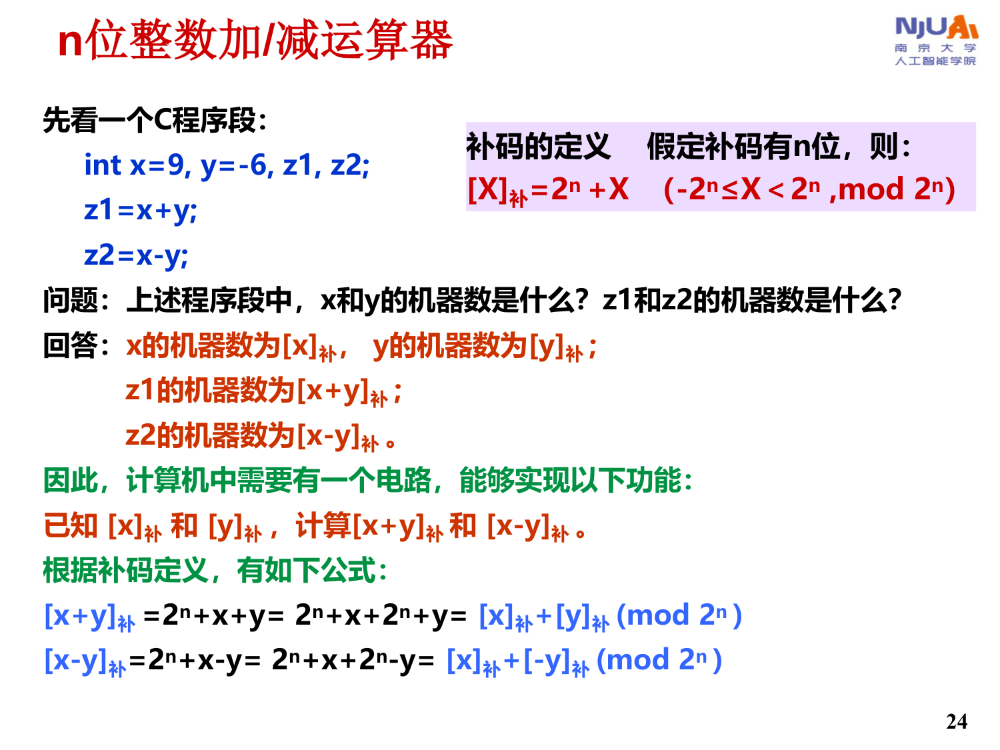
这页在说什么
从一段 C 代码 int x=9, y=−6; z1=x+y; z2=x−y; 出发，问硬件需要造一个什么样的电路。答案是：一个能把两个补码相加（或相减）、并按 mod 2ⁿ 截断的加法器。
核心公式推导（PPT 最后两行的细节）
看第一条：[x+y]补 = 2ⁿ + (x+y) 是补码定义。把它拆成 2ⁿ + x + 2ⁿ + y 时多加了一个 2ⁿ，但因为最终模 2ⁿ，多出的 2ⁿ 自动被丢掉。所以：
[x+y]补 ≡ [x]补 + [y]补 (mod 2ⁿ)
第二条 [x−y]补 = [x]补 + [−y]补 (mod 2ⁿ) 同理。
把 9 和 −6 代进去走一遍（4 位）
[9]补 = 不存在！4 位补码范围 −8…+7。所以课本这里实际假设的是更宽位数（比如 5 位）。我们用 5 位演示：
- [9]补 = 01001，[−6]补 = 11010。
- 相加：01001 + 11010 = 1 00011（最高位的 1 是溢出的进位，扔掉）→ 00011 = +3 ✓ 正是 9 + (−6)。
这就是 z1 = x+y = 3 的硬件过程。z2 = x − y 留到下一页讲。
加减运算器：电路怎么搭
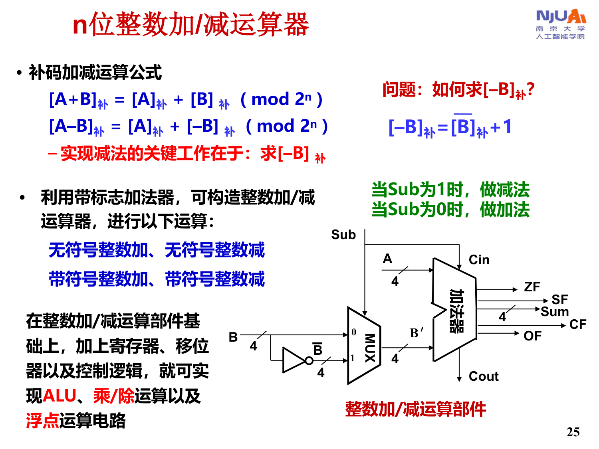
右下那张图怎么读
三个关键零件：
- 一排反相器（图中三角形带圈）：把 B 变成 ~B（按位取反）。
- 一个 MUX（多路选择器）：根据 Sub 信号选 B 还是 ~B 送进加法器。
- Sub=0（加法）：选 B 本身。
- Sub=1（减法）：选 ~B。
- n 位加法器（就是第一讲造的那个 CLA）：A + B' + Cin。其中 Cin 也接到 Sub 信号上。
为什么这样接就能做减法
回忆 A0 背景页：[−B]补 = ~[B]补 + 1。把这个公式映射到电路：
- "~[B]补" → 反相器一排，得到 B' = ~B。
- "+1" → 加法器最低位的 Cin 置 1（这就是为啥 Sub 同时驱动 MUX 和 Cin）。
于是减法时，加法器实际算的是 A + ~B + 1 = A + [−B]补 = [A − B]补。一个加法器同时干加法和减法，省了一半电路。
四个输出标志位（下一页详讲）
- ZF Zero Flag：结果是不是全 0
- SF Sign Flag：结果最高位（= 带符号意义下的"负号"）
- CF Carry Flag：最高位的进位/借位（无符号溢出）
- OF Overflow Flag：带符号溢出
四个标志位 & 两种溢出
四个标志位 = ALU 算完顺手记的"备忘录"
| 标志 | 定义 | 啥时候有用 |
|---|---|---|
| ZF | 结果 = 0 时为 1 | 判等：if (a==b) 编译成 sub; jz |
| SF | 结果最高位 | 带符号判正负 |
| CF | 最高位往外的进位（减法时表示借位） | 无符号溢出判断 / 比大小 |
| OF | 带符号溢出标志 | 带符号溢出判断 |
关键观念：同样的 01 串，两种解读
比如 4 位的 1010，无符号读 = 10，带符号读 = −6。硬件不知道你想要哪种——它两种标志都算好放着，程序/编译器自己挑用哪个。
带符号溢出（OF）怎么判？两条等价规则
（异或为 1 → 溢出）
直觉：正常情况，"算出来的最高位 = 应该有的符号位"，等价于这两个进位相等。
直觉：正+正得负、负+负得正，肯定溢出。一正一负永远不会溢出。
无符号溢出（CF）怎么判？
- 加法：最高位有进位 → CF=1，说明结果超出了 n 位无符号范围。
- 减法：最高位有借位 → CF=1（也就是差为负，无符号场景下视为溢出）。
用减法做大小比较（很重要的考点）
| 解读方式 | A > B 判据 |
|---|---|
| 无符号 | A − B 后 CF = 0 |
| 带符号 | A − B 后 OF = SF（即 OF ⊕ SF = 0） |
带符号那条想直白：没溢出时 SF 就是真实正负（A<B 则差是负，SF=1）；溢出时 SF 被反转，所以正确的"差是负"判据要把 SF 和 OF 异或一下还原。
减法举例（看标志位用法）
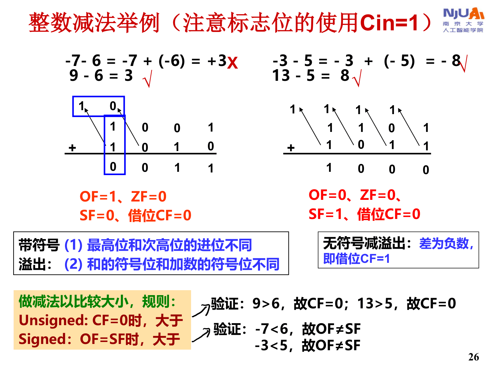
左列：4 位带符号减法 −7−6 vs 9−6
注意 4 位带符号范围只有 −8…+7。所以 −7 − 6 = −13 超出范围，必然溢出。看演算：
-7 = 1001 (带符号) 9 = 1001 (无符号) + -6 = 1010 ([-6]补) + -6 = 1010 ———————————— ———————————— (1)0011 → 结果=+3，错! (1)0011 → 结果=3，对!
同样的 01 算式，无符号下是对的（9−6=3），带符号下是错的（−7−6 应=−13）。这就是 A1 背景页强调的"两套世界"。
看标志位（左下框）：最高位进位 = 1，次高位进位 = 0，两个进位不同 → OF=1（带符号溢出）。CF=0（无符号没问题）。
所以编译器/CPU 的态度是：谁关心带符号谁看 OF，谁关心无符号谁看 CF。
右列：−3−5 vs 13−5
类似分析。带符号 −3−5=−8（刚好在 −8…+7 内），不溢出，OF=0，SF=1 表示负。结果 1000 带符号读 = −8 ✓。无符号 13−5=8 也对。
页面下半：用减法比大小
这就是 A1 背景页那张表的实战：
- 无符号：9>6（13>5）→ 减法后 CF=0 ✓
- 带符号：−7<6 → 验证 OF≠SF（OF=1, SF=0）✓；−3<5 → OF=0, SF=1，仍然 OF≠SF ✓
C 减法 ↔ 机器码（同一指令，不同解读）
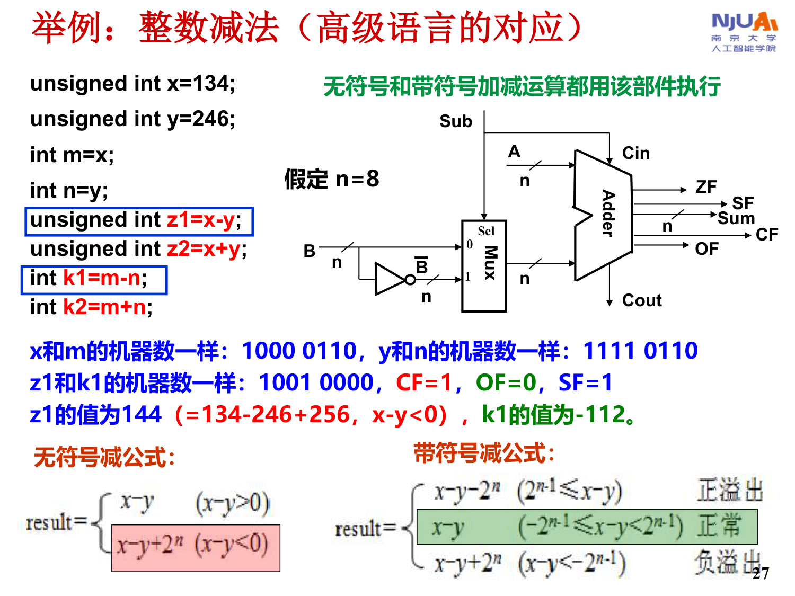
这页的核心戏
四个变量：unsigned x=134, y=246; int m=134, n=246;（注意 n=246 在 8 位 int 范围外，会被截成 −10，但 m=x 的机器码相同 = 10000110，n=y 同理 = 11110110）。
关键事实：x 和 m 的机器位串完全一样（1000 0110），y 和 n 也完全一样（1111 0110）。区别只在编译器告诉 CPU 用哪条减法规则去解读结果标志。
算 z1 = x − y（unsigned）和 k1 = m − n（int）
硬件做的事一模一样：1000 0110 − 1111 0110。先把后者转成补码加：[−n]补 = 0000 1010。
1000 0110 + 0000 1010 ———————————— 1001 0000 → 结果机器码 = 1001 0000
CF=1（高位没进位 = 有借位）、OF=0、SF=1。
- z1 当无符号读：1001 0000 = 144。验算：134 − 246 = −112，在无符号 8 位里"绕回去" = −112 + 256 = 144 ✓。CF=1 告诉我们"溢出了 / 差为负"。
- k1 当带符号读：1001 0000 = −112。验算：m − n = 134 − (−10) = ……等下，n 被截成 −10 后 m−n = 144？这里 PPT 的设置是 m=x=134, n=y 直接看作 int 的 1111 0110 = −10？
其实更干净的看法：k1 的机器码也是 1001 0000，带符号读 = −112。和 z1 是同一个 01 串、不同语义。
右下两条 result 公式（背下来）
x−y > 0 → result = x−y
x−y < 0 → result = x−y + 2ⁿ （绕回去）
在 [−2ⁿ⁻¹, 2ⁿ⁻¹) 内 → 正常
≥ 2ⁿ⁻¹ → 正溢出，结果 = 真值 − 2ⁿ
< −2ⁿ⁻¹ → 负溢出，结果 = 真值 + 2ⁿ
这两张表就是 ALU 那个加减部件"在 C 语言眼里"到底干了啥的字典。
C 加法 ↔ 机器码
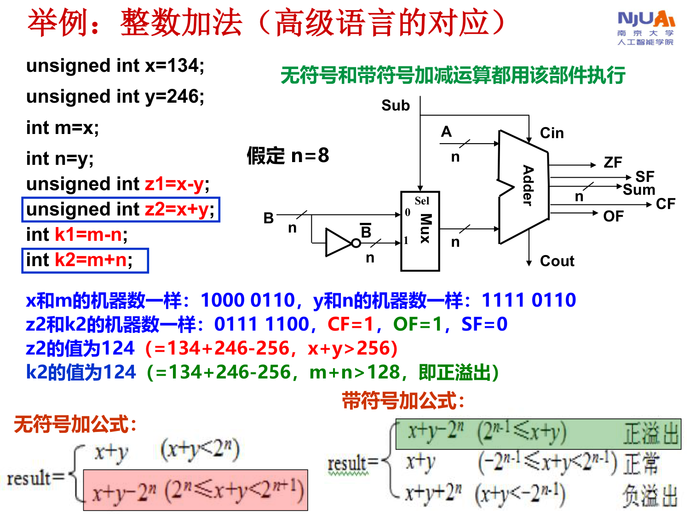
同样一套设定，看加法
算 z2 = x + y（unsigned）和 k2 = m + n（int）。机器执行：1000 0110 + 1111 0110。
1000 0110 + 1111 0110 ———————————— (1)0111 1100 → 结果机器码 = 0111 1100，最高位有进位
CF=1（无符号进位）、OF=1（带符号溢出，因为两加数都是"负"——最高位都是 1——但结果最高位变成 0）、SF=0。
- z2 当无符号：0111 1100 = 124。验算：134+246 = 380，无符号 8 位绕一圈：380 − 256 = 124 ✓。CF=1 提示"和超过 255 了"。
- k2 当带符号：m + n 在带符号语义下是 (−122) + (−10) = −132，超出 −128 范围 → 正溢出（包回正区间）。结果 = 124，OF=1 提示"这个 124 是假的，真值是 124 − 256 = −132"。
右下两条 result 公式（背下来）
x+y < 2ⁿ → result = x+y
2ⁿ ≤ x+y < 2ⁿ⁺¹ → result = x+y − 2ⁿ（绕一圈）
<2ⁿ⁻¹ ≤ x+y →"x+y − 2ⁿ" → 正溢出
−2ⁿ⁻¹ ≤ x+y < 2ⁿ⁻¹ → 正常
x+y < −2ⁿ⁻¹ →"x+y + 2ⁿ" → 负溢出
为什么浮点尾数要用原码
三种编码对比（再复习一遍）
| 编码 | −6（4 位） | +6（4 位） | 特点 |
|---|---|---|---|
| 原码 | 1110 | 0110 | 符号位 + 绝对值，最直观 |
| 补码 | 1010 | 0110 | 加减运算最方便 |
| 移码 | 0010 | 1110 | 大小比较最方便（直接当无符号比） |
为什么浮点尾数用原码
浮点数标准形式：±1.xxxxx × 2ᵉ。那个 ± 是单独存的符号位，"1.xxxxx" 是纯正的绝对值。
这个表示天然就是"符号 + 绝对值"的格式——也就是原码的样子。所以浮点的尾数部分（mantissa）用原码最省转换。
原码加减的总思路
因为符号位本身不参与数值大小（它只是个"正负标签"），所以原码加减不能像补码那样直接送 ALU，而要：
- 看符号位：决定到底是要做"绝对值相加"还是"绝对值相减"。
- 数值部分送 ALU：算绝对值的加减（这部分本质就是无符号运算）。
- 判结果符号：根据"谁绝对值大"或"是否借位"决定。
所以接下来 p29/p30 的"同号求和、异号求差……"这一堆规则，本质是在告诉你 什么时候要做加、什么时候要做减、结果符号怎么填。
原码加/减运算规则
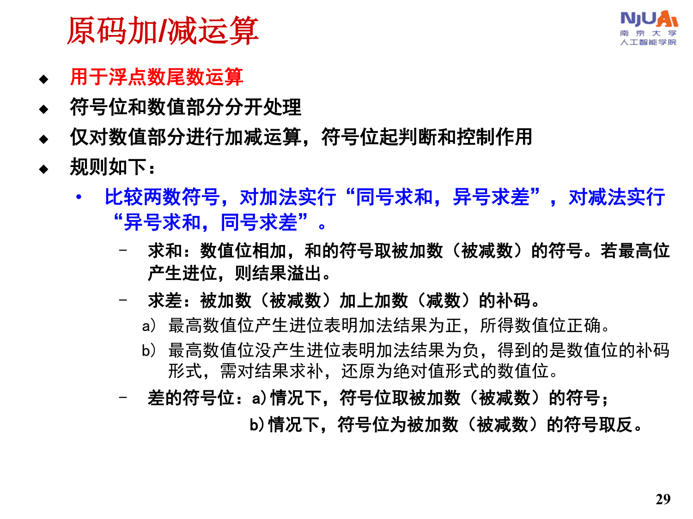
2×2 决策表（更直观）
| 同号 | 异号 | |
|---|---|---|
| 做加法 | 求和（数值直接加） | 求差（小的减大的） |
| 做减法 | 求差 | 求和 |
口诀：加同减异要求和，加异减同要求差。
求和（数值位直接相加）
- 结果数值位 = 两数数值位相加
- 结果符号 = 被加数（或被减数）的符号
- 溢出判定：最高数值位有进位 → 溢出
求差（用"加补码"代替减法）
关键 trick：要算 |X| − |Y| 时，把 |Y| 转成补码再加（套用补码加减原理，硬件复用 ALU）。然后看最高位进位：
- 有进位（情况 a）→ 加法结果就是正确的绝对值，符号 = 被减数符号
- 没进位（情况 b）→ 加出来的是"补码形式的负数"，要再求一次补（取反加 1）还原成绝对值；符号 = 被减数符号取反
原码加/减运算例题
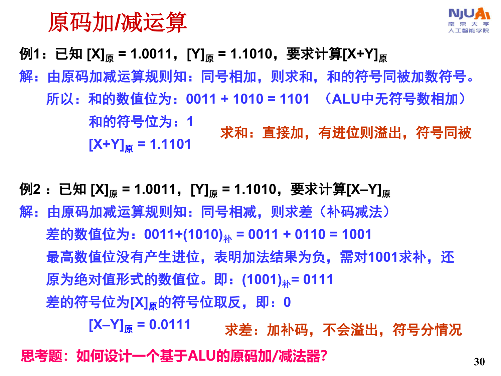
例 1：[X]原 = 1.0011，[Y]原 = 1.1010，求 [X+Y]原
读题：X = −0.0011（约 −0.1875），Y = −0.1010（约 −0.625）。同号 + 求和。
- 数值位相加：0011 + 1010 = 1101（ALU 当无符号加）
- 符号位 = 被加数符号 = 1
- [X+Y]原 = 1.1101（真值 ≈ −0.8125 ✓）
例 2：同 X、Y，求 [X−Y]原
同号 + 减法 → 求差。要算 |X| − |Y| = 0011 − 1010。用"加补码"trick：
- [1010]补 = 0110（取反 0101 + 1 = 0110）
- 0011 + 0110 = 1001。最高位没有进位 → 落到"情况 b"。
- 对 1001 再求补：取反 0110 + 1 = 0111。这才是真正的 |X−Y| 数值位。
- 符号取反：被减数符号是 1（负），取反 → 0（正）
- [X−Y]原 = 0.0111（真值 ≈ +0.4375 ✓ 等于 −0.1875 − (−0.625)）
页面底部思考题"如何设计基于 ALU 的原码加/减法器？"——答：在 ALU 外面加一圈控制逻辑（看符号 → 决定 Sub 信号 → 看进位 → 决定是否求补回填、符号翻不翻）。
移码定义复习
移码 = 真值 + 偏置
n 位移码定义：[E]移 = 2ⁿ⁻¹ + E（其中 −2ⁿ⁻¹ ≤ E < 2ⁿ⁻¹）。直观看就是把数轴整体平移到非负区间，让"最小的负数"对应到 0000…0、"最大的正数"对应到 1111…1。
4 位移码全表（背一遍很值）
| 真值 | −8 | −7 | −6 | … | −1 | 0 | +1 | … | +6 | +7 |
|---|---|---|---|---|---|---|---|---|---|---|
| 移码 | 0000 | 0001 | 0010 | … | 0111 | 1000 | 1001 | … | 1110 | 1111 |
| 补码 | 1000 | 1001 | 1010 | … | 1111 | 0000 | 0001 | … | 0110 | 0111 |
移码和补码的关系（核心结论）
同一个真值的移码和补码，只差一个"符号位取反"。数值位完全一样！例如 −6：移码 0010、补码 1010，最高位翻一翻，其它三位都是 010。
为什么浮点阶码用移码
浮点数比大小时，硬件要先比阶码再比尾数。移码的好处：直接当无符号数比大小就对了（因为它把负阶码也平移到正区间）。补码不行——补码下 1000 是 −8、0000 是 0，无符号比时反而 1000 大。
移码加/减运算公式
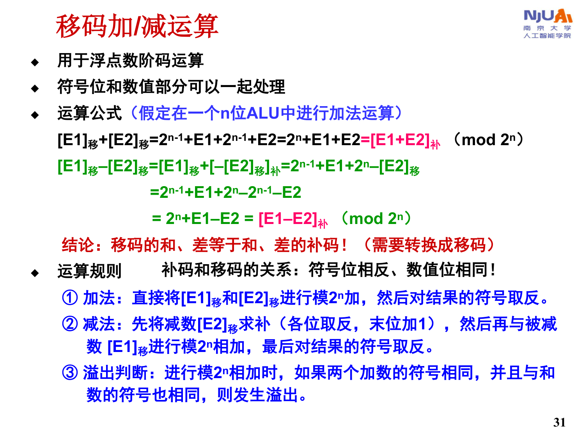
推导主线（看懂第一行就够了）
把 [E1]移 和 [E2]移 直接当无符号 n 位数加：
[E1]移 + [E2]移 = (2ⁿ⁻¹ + E1) + (2ⁿ⁻¹ + E2) = 2ⁿ + (E1 + E2) ← 多了一个 2ⁿ⁻¹ = [E1+E2]补 (mod 2ⁿ) ← 减去那个 2ⁿ⁻¹ 才是移码
结论：移码直接相加 = (E1+E2) 的补码。补码和移码差一个符号位翻转，所以只要把结果符号位取反就得到 [E1+E2]移。
三条操作规则
- 加法：移码直接 mod 2ⁿ 相加 → 结果符号位取反 = 答案的移码
- 减法：先把减数 [E2]移 求补（各位取反 + 末位加 1）→ 再和 [E1]移 相加 → 结果符号位取反
- 溢出：两加数符号相同、且与结果符号也相同 → 溢出
为啥这条这么"反"？移码的符号位是 0 表示负数、1 表示正数（反着的！）。"两加数符号相同"≈"两个真值同号"，"和的符号又和它们相同"≈"和的真值也同号"——这本来正常啊？不！记住移码符号是反的，所以"看着同号、看着结果也同号"翻译回真值是"两加数同号、结果异号"，这正是溢出的特征。
移码加/减运算例题
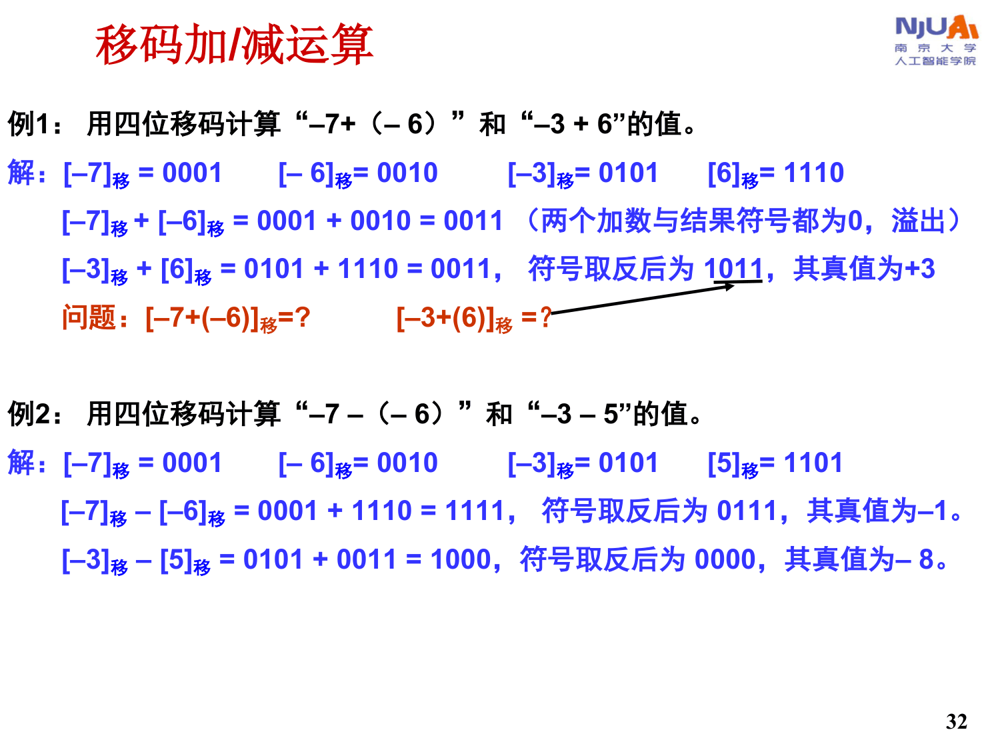
例 1：用 4 位移码算 −7+(−6) 和 −3+6
先把每个数转成移码（套 C0 背景表）：
- [−7]移 = 0001，[−6]移 = 0010，[−3]移 = 0101，[6]移 = 1110
子例 (a)：[−7]移 + [−6]移 = 0001 + 0010 = 0011。
符号位看溢出：加数符号都是 0、结果符号也是 0 → 溢出（真值 −13 确实超出 4 位移码范围 −8..+7）。
子例 (b)：[−3]移 + [6]移 = 0101 + 1110 = (1)0011，扔掉进位 → 0011。符号位取反 → 1011。
查表：1011 对应真值 = +3 ✓（−3 + 6 = 3）。
例 2：减法 −7−(−6) 和 −3−5
- (a) −7 − (−6)：[−7]移 + [[−6]移]补。
[−6]移 = 0010，求补 → 1110。
[−7]移 + 1110 = 0001 + 1110 = 1111。符号位取反 → 0111。
查表：0111 → −1 ✓（−7 − (−6) = −1）。 - (b) −3 − 5：[5]移 = 1101，求补 → 0011。
[−3]移 + 0011 = 0101 + 0011 = 1000。符号位取反 → 0000。
查表：0000 → −8 ✓（−3 − 5 = −8，刚好压线）。
第二讲目录（指向乘法）
下面进入乘法运算部分。
从手工十进制乘法 → 二进制乘法
先回忆小学怎么算 13 × 12
1 3
× 1 2
————
2 6 ← 13 × 2，对齐到个位
1 3 ← 13 × 1，对齐到十位（左移一位）
————
1 5 6
三个动作：① 拿乘数每一位去乘被乘数；② 按位错位（左移）；③ 把所有部分积加起来。
二进制乘法 = 手工乘法的退化版
关键观察：二进制乘数的每一位只能是 0 或 1，所以"按位乘"退化成两种情况：
- 该位是 0 → 部分积 = 全 0
- 该位是 1 → 部分积 = 被乘数本身（原样抄下来）
也就是说，二进制乘法不需要真正的乘法运算，只需要"看一位 → 决定要不要抄被乘数 → 错位 → 累加"。这一性质让乘法器电路成为可能：只用加法器 + 移位器 + 一个判断位 就行。
4 位例子：1000 × 1001（=8×9=72）
1 0 0 0 ← X (被乘数)
× 1 0 0 1 ← Y (乘数)
————————
1 0 0 0 ← Y 第 0 位 = 1，写 X
0 0 0 0 ← Y 第 1 位 = 0，写 0（左移 1）
0 0 0 0 ← Y 第 2 位 = 0，写 0（左移 2）
1 0 0 0 ← Y 第 3 位 = 1，写 X（左移 3）
————————————
1 0 0 1 0 0 0 ← 求和：十进制 72 ✓
注意：n 位 × n 位 → 最多 2n 位结果（72 不到 2⁷=128 所以是 7 位）。这就是为什么硬件实现中要准备双倍字长的乘积寄存器。
无符号数乘法（手工计算）
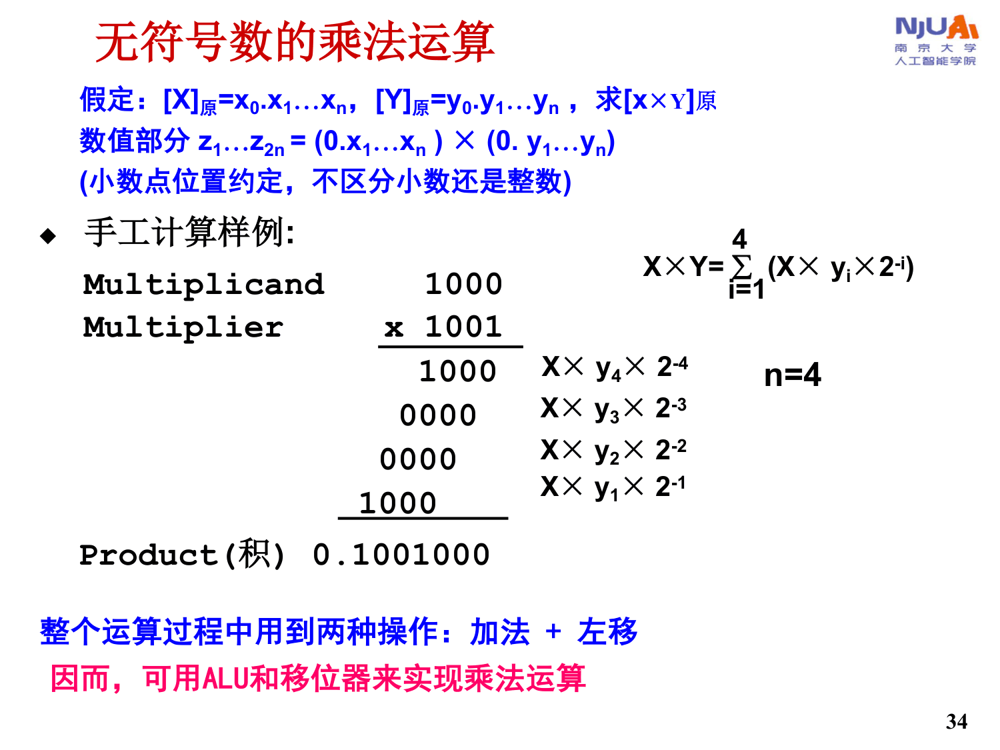
这页就是 D0 背景的 PPT 版
例子相同：1000 × 1001。乘积 = 0.1001000（PPT 假定小数点位置约定，整数小数都行，不影响算法）。
核心公式
X × Y = Σᵢ₌₁ⁿ (X · yᵢ · 2⁻ⁱ)
解读：把每一位的"部分积"（X·yᵢ）按权值 2⁻ⁱ 加权累加。这里 PPT 用的是小数版（2⁻¹、2⁻²……），如果是整数就把 2⁻ⁱ 换成 2ⁿ⁻ⁱ。两者算法完全等价。
把手工乘法搬到机器里：三点改进
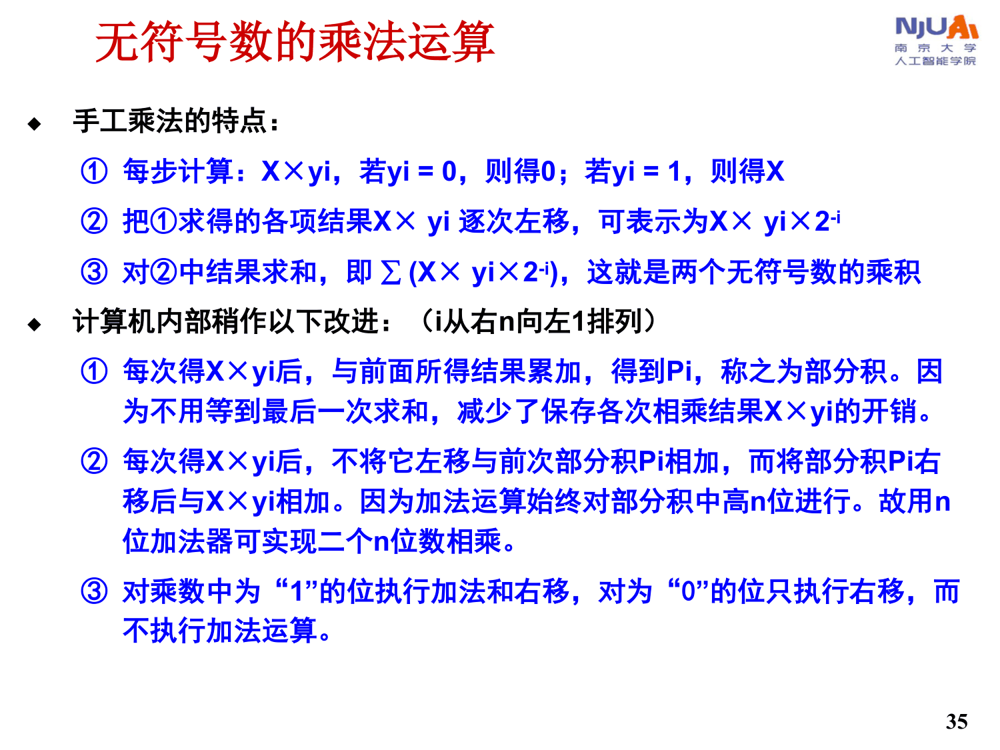
手工乘法直接搬硬件有两个问题：① 要同时存 n 个 X·yᵢ 中间结果，太费寄存器；② 部分积要往左错位 n 次，结果有 2n 位宽，加法器也要 2n 位宽，浪费。三点改进就是解决这两点。
改进 ①：边乘边加（部分积累加）
不要等所有 X·yᵢ 都算完再加。每算出一个就立刻和"已有部分积"累加，记为 Pᵢ。这样只需要一个寄存器存当前 P，省掉了存 n 个中间结果的开销。
改进 ②（最关键）：部分积右移，代替被乘数左移
手工乘法是"被乘数往左错位、累加"。机器里改成被乘数固定不动、部分积每次往右移一位。两者数学等价（相对错位一样），但好处巨大：
改进 ③：yᵢ = 0 时跳过加法
乘数那一位是 0，部分积乘出来还是 0，加上去等于没加。电路上检测到 0 就只移不加，省一次加法时间。
递推公式推导
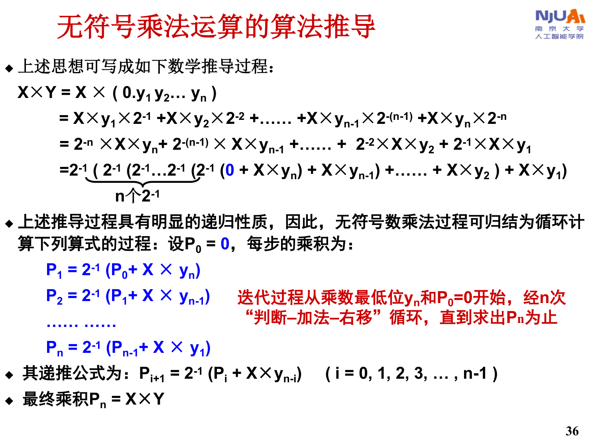
把累加和写成嵌套形式
从 X×Y = X·y₁·2⁻¹ + X·y₂·2⁻² + … + X·yₙ·2⁻ⁿ 出发，从最高次项开始往外提 2⁻¹：
X×Y = 2⁻¹ ( 2⁻¹ ( ... 2⁻¹ ( 2⁻¹ (0 + X·yₙ) + X·yₙ₋₁ ) ... + X·y₂ ) + X·y₁ )
看清楚了：最里层是 "0 + X·yₙ"（用 yₙ，最低位先用！），每往外一层就"加一个 X·yᵢ 再除以 2"。
读出递推公式
设 P₀ = 0，每一步：
Pᵢ₊₁ = 2⁻¹ · (Pᵢ + X · yₙ₋ᵢ) （i = 0, 1, …, n−1）
循环 n 次后，Pₙ = X×Y。
- 看当前位：是 1 就 P+X，是 0 就 P 不变
- P 整体右移一位（这就是公式里的 2⁻¹）
- 循环 n 次
32 位乘法硬件结构
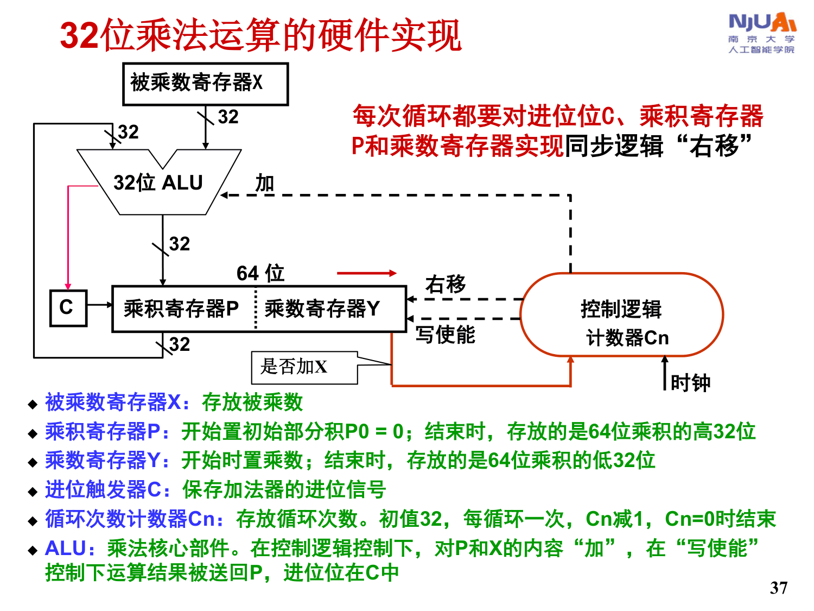
五个零件
- X 寄存器（32 位）：放被乘数，整个过程不动。
- P 寄存器（32 位）：放当前部分积。开始 = 0；结束时存的是 64 位结果的高 32 位。
- Y 寄存器（32 位）：开始时放乘数；每右移一位，Y 的最低位被丢弃，原本 P 的最低位填入 Y 的最高位——也就是说 P 和 Y 拼成一个 64 位的大寄存器，整体右移。结束时 Y 存的是结果的低 32 位。
- C 触发器（1 位）：保存 ALU 加法的进位。右移时它也作为 P 的最高位被移进去。
- Cₙ 计数器：初值 32，每次循环减 1，归 0 就停。
一个周期内发生啥（重要！）
- 看 Y 的最低位：是 1 → ALU 算 P+X 送回 P（同时把进位记到 C）；是 0 → 跳过加法。
- 同步右移：{C, P, Y} 这 65 位整体右移 1 位。原本 Y[0]（已经用过）被丢；P[0] 移到 Y[31]；C 移到 P[31]。
- Cₙ ← Cₙ − 1。
为什么 P 和 Y 拼起来正好
循环 32 次后，原本的乘数 Y 已经"从 Y 寄存器里被一位一位挤掉"，腾出的空间正好被部分积的低位填满。结束态 {P, Y} 就是 64 位乘积。这正是 D0 背景里说的"2n 位结果"——只是把 2n 位"拆"在两个 n 位寄存器里，不需要造 2n 位加法器。
数值例子：14 × 13 = 182
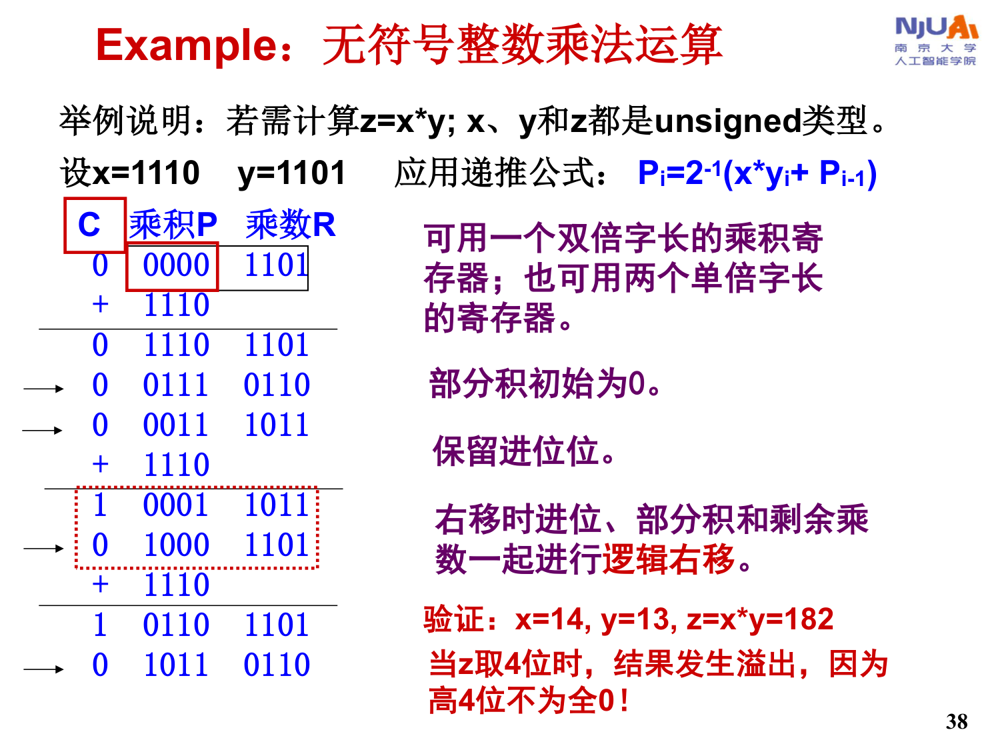
设 X = 1110 (=14), Y = 1101 (=13)。用 p37 的硬件跑 4 次循环。下面把演算重画成清晰的表格（PDF 上那张表对应我下方每两行 = 一次"加 / 移"）：
| 步 | 动作 | C | P (高位) | R/Y (低位) | 解读 Y 末位 |
|---|---|---|---|---|---|
| 0 | 初始 | 0 | 0000 | 1101 | — |
| 1 | Y[0]=1，P ← P+X | 0 | 1110 | 1101 | 1 → 加 |
| {C,P,Y} 整体右移 | 0 | 0111 | 0110 | — | |
| 2 | Y[0]=0，跳过加法 | 0 | 0111 | 0110 | 0 → 不加 |
| 右移 | 0 | 0011 | 1011 | — | |
| 3 | Y[0]=1，P ← P+X | 1 | 0001 | 1011 | 1 → 加 |
| 右移 | 0 | 1000 | 1101 | — | |
| 4 | Y[0]=1，P ← P+X | 1 | 0110 | 1101 | 1 → 加 |
| 右移 | 0 | 1011 | 0110 | — |
最终 {P, Y} = 1011 0110 = 182 ✓（14 × 13 = 182）。
PPT 右下角"当 z 取 4 位时，结果发生溢出"——意思是如果 C 程序写
uint8_t z = x*y;（只留低 4 位），那么真值 182 的高 4 位 1011 就丢了，剩下低 4 位 0110 = 6，结果错。这就是 C 里乘法溢出的根源。原码乘法 & 两位乘法（加速一倍）
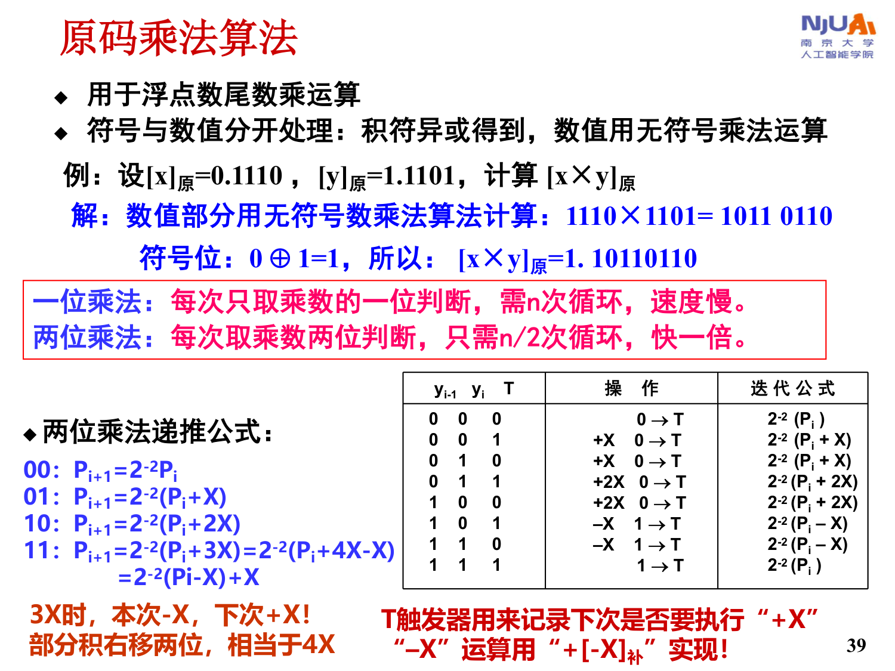
上半页：原码一位乘法
策略和原码加减一样：符号位和数值位分开。
- 符号位：两数符号位异或得到积的符号
- 数值位：用上面的"无符号一位乘法"算法
例 [x]原 = 0.1110, [y]原 = 1.1101：数值位 1110 × 1101 = 10110110，符号 0⊕1=1，所以 [x×y]原 = 1.10110110。
下半页：两位乘法，速度翻倍
核心思路：一次看乘数 2 位（而不是 1 位），循环次数减半（n → n/2）。每次根据这 2 位的组合决定加什么倍数的 X：
| yᵢ₋₁ yᵢ T | 本次操作 | 下次 T | 意义 |
|---|---|---|---|
| 00 0 | 什么都不加 | 0 | 00 |
| 00 1 | +X | 0 | "上次欠的 X 这次还" |
| 01 0 | +X | 0 | 01 |
| 01 1 | +2X | 0 | 01 + 上次欠的 1 = 10 |
| 10 0 | +2X | 0 | 10 |
| 10 1 | −X | 1 | 下面解释 |
| 11 0 | −X | 1 | 3X = 4X − X，借一个 |
| 11 1 | 0 | 1 | 11 + 1 = 100 全进位 |
T 触发器就是用来记"下次要不要补 +X"的——它是这一次有没有"借"过的记忆。
"+2X"硬件上 = X 左移 1 位；"−X"硬件上 = 加 [−X]补。所以两位乘法依然只用加法器 + 移位器。
原码两位乘法例题
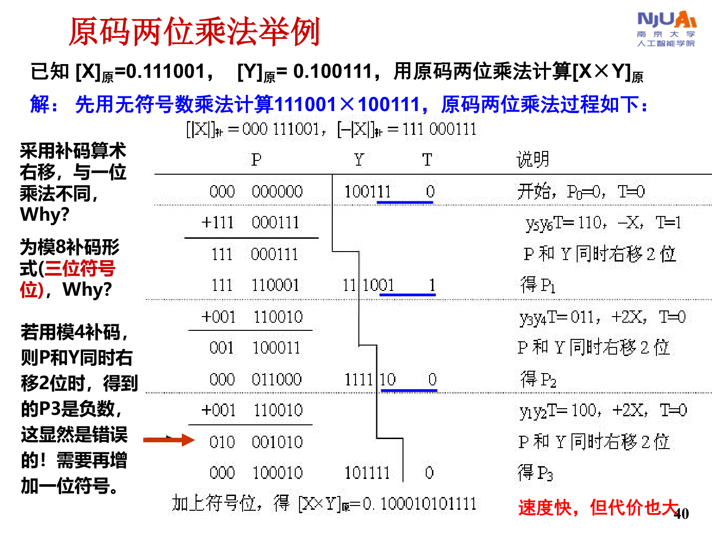
题目设定
[X]原 = 0.111001，[Y]原 = 0.100111。数值部分 6 位，要计算 111001 × 100111。
[|X|]补 = 000 111001（3 位符号位 + 6 位数值，下面解释为什么 3 位），[−|X|]补 = 111 000111。
为什么要 3 位符号位（PPT 红字提醒）
两位乘法每次部分积右移 2 位。如果只用 2 位符号位，"−X"操作后部分积可能跨过 2ⁿ⁻¹ 的边界，符号位不够区分本来的负数和右移后的负数，会把负数误判成正数。所以要扩成 3 位符号位作"缓冲"。
逐步走一遍（PPT 表格的翻译）
对照 PDF 截图里那张演算表（标"P, Y, T"三列），从右往左两位一组扫描 Y = 100111：
- 初始：P = 000 000000，Y = 100111，T = 0。
- 第 1 轮：看 y₅y₆T = 110 → +[−X]补（行 11 0 是 −X，T 置 1）。加完 P = 111 000111，P 和 Y 一起算术右移 2 位（注意是算术，因为 P 现在是负数，符号位要保持）→ P = 111 110001，Y 的高 2 位接管原来的 P 低 2 位 = 11，所以 Y = 11 1001。这就是 P₁。
- 第 2 轮：看 y₃y₄T = 011 → +2X（即 +X·2，左移）。加上 +001110010 后 P = 001 011000……（演算细节同 PDF）
- 第 3 轮：看 y₁y₂T = 100 → +2X。最终 {P, Y} = 0.100010101111。
PPT 下方"速度快，但代价也大"——两位乘法把循环从 32 次降到 16 次，但电路里要多一套 −X 通路、多一个 T 触发器、还要多 1 位符号位。这是典型的用面积换时间。
为什么补码不能直接当无符号数乘
一个反例
用 4 位补码算 (−5) × (−5) = 25。[−5]补 = 1011。如果当作无符号 4 位数送进刚才的乘法器：
1011 × 1011 = 1011 × (8+2+1)
= 88 + 22 + 11
= 1111001 (二进制) = 121
结果是 121，不是 25。错了。
原因
补码的最高位是负权（−2ⁿ⁻¹）而不是正权（+2ⁿ⁻¹）。直接当无符号乘，把这个负权当成了正权，差值 = 2·2ⁿ⁻¹·(其它位的和) 完全错位。所以补码乘法不能简单复用无符号乘法器，要么先转原码再乘（费一步转换）、要么用专门的Booth 算法。
Booth 算法的核心想法（一句话预告）
Booth 注意到：把补码的真值公式 Y = −yₙ₋₁·2ⁿ⁻¹ + yₙ₋₂·2ⁿ⁻² + … + y₀·2⁰ 重新组合后，每一项的系数可以写成相邻两位的差 (yᵢ₋₁ − yᵢ)，差值只能是 −1、0、+1。于是：
- 相邻两位相同（00 或 11）→ 系数 0，不加
- 从 1 跳到 0（10）→ 系数 −1，−X
- 从 0 跳到 1（01）→ 系数 +1，+X
所以 Booth 把"补码乘法"变成"看相邻位变化 → 加 / 减 / 不动"，符号位自动处理，统一用同一套硬件。下一页就是这个推导。
补码乘法（Booth 算法）
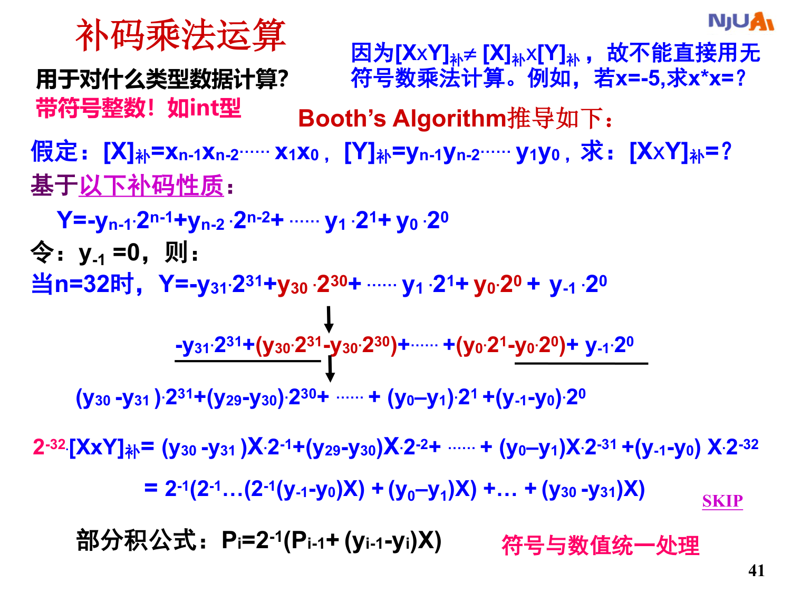
推导主线（PPT 上的 SKIP 部分我精简讲）
起点：补码真值公式（详见 p42 那张速查图）
Y = −yₙ₋₁·2ⁿ⁻¹ + yₙ₋₂·2ⁿ⁻² + … + y₁·2¹ + y₀·2⁰
关键技巧 1：插入虚拟位 y₋₁ = 0（最低位右边再加一位 0）。这一步是为了让公式形式统一。
关键技巧 2：把每一项 yᵢ·2ⁱ 改写成 (yᵢ·2ⁱ⁺¹ − yᵢ·2ⁱ) 然后重新分组，使每项的系数变成 (yᵢ₋₁ − yᵢ)。代数上完全等价，只是换了一种"组合方式"。重排后得到：
Y = (y₋₁ − y₀)·2⁰ + (y₀ − y₁)·2¹ + … + (yₙ₋₂ − yₙ₋₁)·2ⁿ⁻¹
注意 最高位项是 (yₙ₋₂ − yₙ₋₁)·2ⁿ⁻¹，它取代了原来的"−yₙ₋₁·2ⁿ⁻¹"那项——符号位被自然地纳入了求和，不再需要特殊处理。
递推公式（PPT 底部红字）
Pᵢ = 2⁻¹ · (Pᵢ₋₁ + (yᵢ₋₁ − yᵢ) · X)
从 i=0 开始（用 y₋₁=0, y₀），循环 n 次得到 Pₙ = [X×Y]补。每一步根据相邻两位的差：
| yᵢ₋₁ yᵢ | 差 yᵢ₋₁−yᵢ | 操作 |
|---|---|---|
| 00 | 0 | 不加，只右移 |
| 01 | −1 | P ← P − X，右移 |
| 10 | +1 | P ← P + X，右移 |
| 11 | 0 | 不加，只右移 |
整个流程和无符号一位乘法器几乎一样，只是：① 加法换成可加可减；② 多看一位上次的乘数位；③ 右移改算术。同一个硬件骨架支持无符号 / 带符号乘法，这就是 Booth 在工业界被广泛采用的原因。
补码真值速查（p41 的附录）
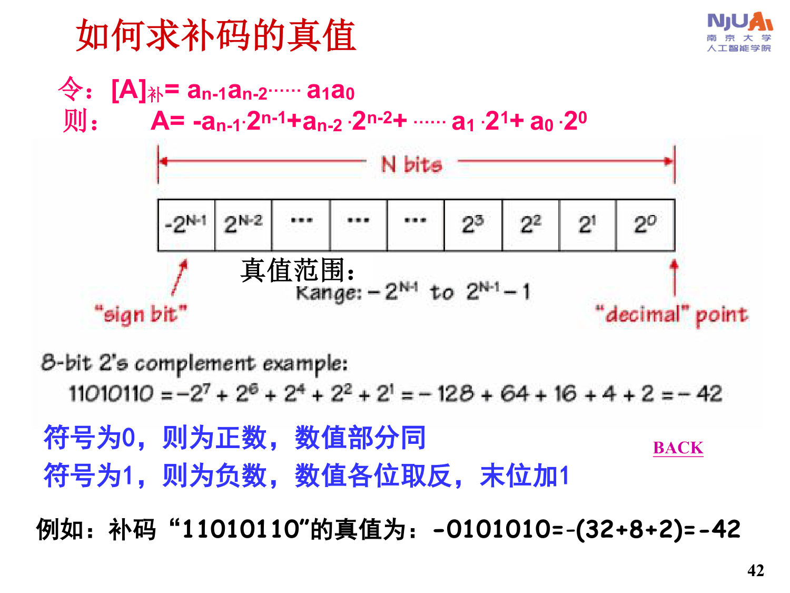
核心公式
A = −aₙ₋₁·2ⁿ⁻¹ + aₙ₋₂·2ⁿ⁻² + … + a₁·2¹ + a₀·2⁰
翻译：最高位权重是负的（−2ⁿ⁻¹），其它位都是正的（按标准二进制位权）。这就是为什么补码的"符号位"是它本身权重符号决定的，而不是约定俗成的标签。
例：11010110 = −42
套公式：−128 + 64 + 0 + 16 + 0 + 4 + 2 + 0 = −42 ✓
或用"求补还原法"：1101 0110 是负数（最高位 1），求补 → 0010 1010 = 42，加负号 → −42。两条路殊途同归。
这页和 Booth 的关系
p41 推导第一行就是这条公式。Booth 的全部魔法都源自"最高位权重是负的"这个事实——为了在求和里"消化"掉那个负号，他用了 (yᵢ₋₁ − yᵢ) 的差值组合技巧。
—— 第二讲前半（p23-42）结束 ——
Booth 算法直观：把"一串 1"压扁
上节回顾
在 p41 我们推出了 Booth 的递推公式 Pᵢ = 2⁻¹(Pᵢ₋₁ + (yᵢ₋₁ − yᵢ)·X)，但只是把它当成"数学魔法"接受了。这页换一个完全不同的视角讲为什么 Booth 行得通，看完你会觉得这是个非常自然的想法。
关键观察：连续的 1 可以化简
考虑一个含连续 1 的二进制数，比如 8 位的 0011 1100。它等于：
如果按 p35 那个朴素乘法器去乘，看到这 4 个 1 就要做4 次加法。但 60 还可以这样写：
也就是说，乘以 0011 1100 等价于"先加 X 左移 6 位，再减 X 左移 2 位"——只用 1 次加 + 1 次减，省掉中间两个 1 的两次加法。
怎么自动发现这种简化
从右往左扫描乘数，盯着相邻两位的变化：
- 0 → 1（看到 1 串的开始）：这一位"应该减"X（因为这是公式右边的 −2ᵏ 项）
- 1 → 1（在 1 串中间）：跳过，啥也不干
- 1 → 0（看到 1 串的结束）：这一位"应该加"X（这是 +2ⁿ⁺¹ 项）
- 0 → 0：跳过
例：乘数 0011 1100，扫描相邻位对（右往左、最右边补一个 0）：
位置: 7 6 5 4 3 2 1 0 (-1)
位值: 0 0 1 1 1 1 0 0 0
扫描: ↑ ↑
1→0(加) 0→1(减)
结论：在第 6 位 +X、在第 2 位 −X，恰好对应 64X − 4X = 60X ✓
所以 Booth 公式就是这个意思
那条 (yᵢ₋₁ − yᵢ) 正是在判断相邻两位的"跳变方向"：
- yᵢ₋₁ − yᵢ = +1 → 0→1 跳变 → 减 X
- yᵢ₋₁ − yᵢ = −1 → 1→0 跳变 → 加 X
- = 0 → 没跳变 → 啥也不干
"在 1 串的开头减，在 1 串结尾加"——这是最容易记的口诀。
为什么这个想法叫"Booth"
Andrew Booth 在 1951 年提出这个算法。当时他的机器上移位比加法快，所以"用更多移位、更少加法"是真金白银的提速。即使现在加法器很快了，Booth 的另一个好处仍然成立——它天然支持补码乘法（因为相邻位差的范围 {−1, 0, +1} 让符号位也被纳入统一求和，见 p41 推导）。
Booth 算法实质
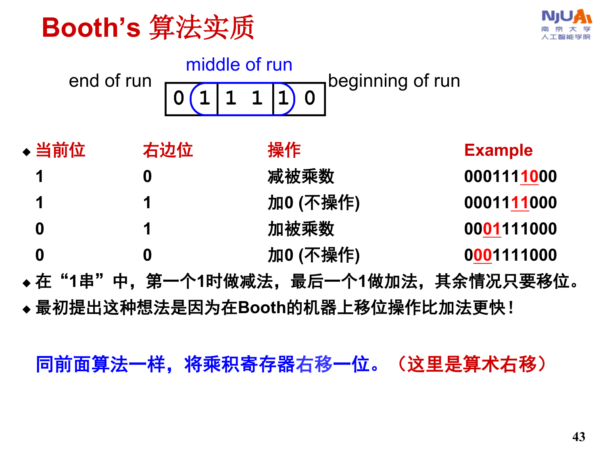
这页给的就是上面那张直观表
把"当前位 + 右边位"两位组合起来看，决定操作：
| 当前位 yᵢ | 右边位 yᵢ₋₁ | 操作 | 含义 |
|---|---|---|---|
| 1 | 0 | −X（减被乘数） | 0→1 跳变，1 串开始 |
| 1 | 1 | 啥也不干 | 1 串中间 |
| 0 | 1 | +X（加被乘数） | 1→0 跳变，1 串结尾 |
| 0 | 0 | 啥也不干 | 0 串中间 |
页面上方的图例怎么读
PPT 顶部的 "0 1 1 1 0" 是把乘数中的"一串 1"画出来：
- beginning of run：从右往左看，第一个 1（最低位的 1）→ 减 X
- middle of run：中间的 1 → 跳过
- end of run：跳到 0 的那个位置（从右往左数最后一个 1 的左边）→ 加 X
合起来：原本要做 3 次加法（每个 1 一次），现在只做 1 加 + 1 减 = 2 次，且 1 串越长越赚。
例子（PPT 最右列 Example）
乘数中有"1110"这一段。从最低位往左扫描：
| 位置 | 当前 / 右边 | 操作 | 累计效果 |
|---|---|---|---|
| 第 3 位的 1 | 1 / 0 | −X | "借走" X·2³ |
| 第 4 位的 1 | 1 / 1 | 跳过 | — |
| 第 5 位的 1 | 1 / 1 | 跳过 | — |
| 第 6 位的 0 | 0 / 1 | +X | "补上" X·2⁶ |
合计：+X·2⁶ − X·2³ = X·(64 − 8) = X·56 = X·(32+16+8) = X·(2⁵+2⁴+2³) ✓ 等于直接逐位累加的结果。
PPT 底部红字"同前面算法一样，将乘积寄存器右移一位（这里是算术右移）"——再强调一遍：Booth 处理的是带符号数，所以右移必须保符号位，否则负数右移变成大正数就全乱了。
Booth 算法举例：(−3) × 6
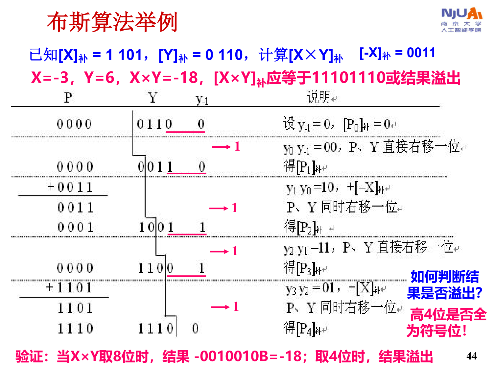
题目
[X]补 = 1101（X = −3），[Y]补 = 0110（Y = 6），求 [X × Y]补。应该等于 −18，即 8 位补码 1110 1110。
准备：[−X]补 = 0011（即 +3 的补码，因为 −X = +3）。
把 4 步循环逐步走一遍
初始：P = 0000，Y = 0110，y₋₁ = 0（虚拟最低位补 0）。
| 轮 | y_i y_{i−1} | 判定 | 操作前 P | 加什么 | 加后 P | 右移后 P / Y / y₋₁ |
|---|---|---|---|---|---|---|
| 1 | 0 0 | 跳过 | 0000 | — | 0000 | 0000 / 0011 / 0 |
| 2 | 1 0 | 1 串开始 → −X，即 +[−X]补 | 0000 | +0011 | 0011 | 0001 / 1001 / 1 |
| 3 | 1 1 | 跳过 | 0001 | — | 0001 | 0000 / 1100 / 1 |
| 4 | 0 1 | 1 串结尾 → +X | 0000 | +1101 | 1101 | 1110 / 1110 / 0 |
最终 {P, Y} = 1110 1110 = [−18]补 ✓
每一步细节再补充
- 轮 1 看 Y 最右两位
y₀y₋₁ = 0 0：两位相同，跳过。然后 P 和 Y 一起算术右移 1 位——原本 Y 的最右位0变成新的 y₋₁，Y 自己被 P 的最低位（0）填到最高位。所以 Y 从 0110 变成 0011。 - 轮 2 看新的
y₀y₋₁ = 1 0：1 串开始，做 P + [−X]补。加完 P = 0011，再右移：P 的最低位 1 进到 Y 最高位，所以新 Y = 1001，新 y₋₁ = 原 Y 的最右位 1。 - 轮 3 看
y₀y₋₁ = 1 1：跳过，右移。 - 轮 4 看
y₀y₋₁ = 0 1：1 串结尾，做 P + [X]补（X 是负的，[X]补 = 1101）。加完 P = 0000 + 1101 = 1101，注意这里是带符号加，1101 是负数。然后算术右移：最高位的 1 复制到下一位，所以 P 变成 1110（不是 0110！）。
补码两位乘法（推导）
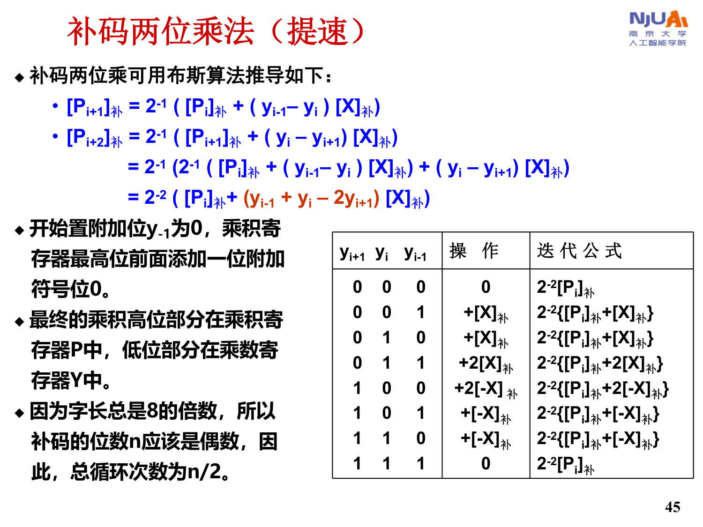
核心想法
Booth 一位乘要循环 n 次。如果每次能看两位，就能压成 n/2 次。怎么把两次连续的一位 Booth 迭代合并成一次两位迭代？——下面那个公式推导就是干这件事的。先看结论，再看推导。
结论：两位乘的操作表
看乘数的三位窗口 yᵢ₊₁ yᵢ yᵢ₋₁，按表查操作：
| yᵢ₊₁ yᵢ yᵢ₋₁ | 操作 | 意义 |
|---|---|---|
| 0 0 0 | 0（跳过） | 没跳变 |
| 0 0 1 | +X | 结束 1 串 |
| 0 1 0 | +X | 独立的 1 |
| 0 1 1 | +2X | 结束更长的 1 串，且当前位也是 1 → 等价 +X·2 (即 +2X) |
| 1 0 0 | +2[−X]补 = −2X | 开始新 1 串，且 yᵢ 是 0 但高位是 1 → 这两位组合是 10 → 减 2X |
| 1 0 1 | −X | "01 → 10"：先 +X 再 −2X，合起来 −X |
| 1 1 0 | −X | 1 串中间，加上当前位是 0 那一位的开始 1 串 → −X |
| 1 1 1 | 0（跳过） | 都在 1 串里面 |
每轮做完后，P 和 Y 算术右移 2 位。
推导（PPT 上面那个公式块的逐步还原）
从一位 Booth 公式出发：
再迭代一次：
把第一条代入第二条：
[Pᵢ₊₂]补 = 2⁻¹(2⁻¹([Pᵢ]补 + (yᵢ₋₁ − yᵢ)[X]补) + (yᵢ − yᵢ₊₁)[X]补)
= 2⁻²[Pᵢ]补 + 2⁻²(yᵢ₋₁ − yᵢ)[X]补 + 2⁻¹(yᵢ − yᵢ₊₁)[X]补
= 2⁻²([Pᵢ]补 + ((yᵢ₋₁ − yᵢ) + 2(yᵢ − yᵢ₊₁))[X]补)
= 2⁻²([Pᵢ]补 + (yᵢ₋₁ + yᵢ − 2yᵢ₊₁)[X]补)
系数 yᵢ₋₁ + yᵢ − 2yᵢ₊₁ 取值范围 {−2, −1, 0, 1, 2}（穷举三位组合），正好对应表里的 −2X / −X / 0 / +X / +2X 五种操作。
循环次数 = n/2。要求 n 是偶数（计算机字长都是 8 的倍数，自然满足）。
两位乘的几个细节再啃一遍
那个 (yᵢ₋₁ + yᵢ − 2yᵢ₊₁) 系数怎么解读
系数本质上是乘数那两位 yᵢ₊₁ yᵢ 所代表的"带符号 2 位整数"减去 yᵢ₋₁。换个角度：
- yᵢ₊₁ yᵢ 看作 2 位补码：00=0、01=+1、10=−2、11=−1
- yᵢ₋₁ 是"上一轮借走的 X"的提醒（类似 p39 的 T 触发器）
- 合起来 = (2 位补码值) + yᵢ₋₁ 的修正
具体对照表：
| yᵢ₊₁ yᵢ | 2 位补码值 | + yᵢ₋₁=0 | + yᵢ₋₁=1 |
|---|---|---|---|
| 00 | 0 | 0 | +1（结束 1 串） |
| 01 | +1 | +1 | +2（11→00 上次借的，本次再加） |
| 10 | −2 | −2 | −1 |
| 11 | −1 | −1 | 0（1 串内部） |
"+2X" 怎么硬件实现
+2X = X 左移 1 位。电路里就是接线时把 X 整体往左挪一格送进加法器，不需要额外移位时钟。所以 +2X 和 +X 在硬件上代价几乎一样。
"−2X" 怎么硬件实现
−2X = 2·(−X) = [−X]补 左移 1 位。还是接线问题，不需要额外周期。
所以两位 Booth 的硬件只需要在加法器输入端加个 4 选 1 多路器（选 0 / +X / +2X / −X / −2X），加法器本身不变。
为什么循环次数是 n/2（不是 (n+1)/2）
第一次循环看的是 y₁ y₀ y₋₁（其中 y₋₁=0），第二次看 y₃ y₂ y₁，依此类推。每次窗口右端的 yᵢ₋₁ 正是上次窗口左端的 yᵢ₊₁，所以 n 位乘数刚好被 n/2 个窗口覆盖完，没有重叠也没有漏。
带符号位的处理
因为 [X]补 是带符号的，加法器要做带符号加（其实就是无符号加，但溢出/符号处理略有不同）。右移用算术右移（保留符号位）。
P 寄存器要比 n 多 1 位（"附加符号位"）来防止"−X 后右移 2 位"导致的符号丢失。p40 的原码两位乘需要 3 位符号位，是因为它还要处理"无符号数值"的最高位进位；这里补码两位乘只需要 1 位附加。
补码两位乘法举例
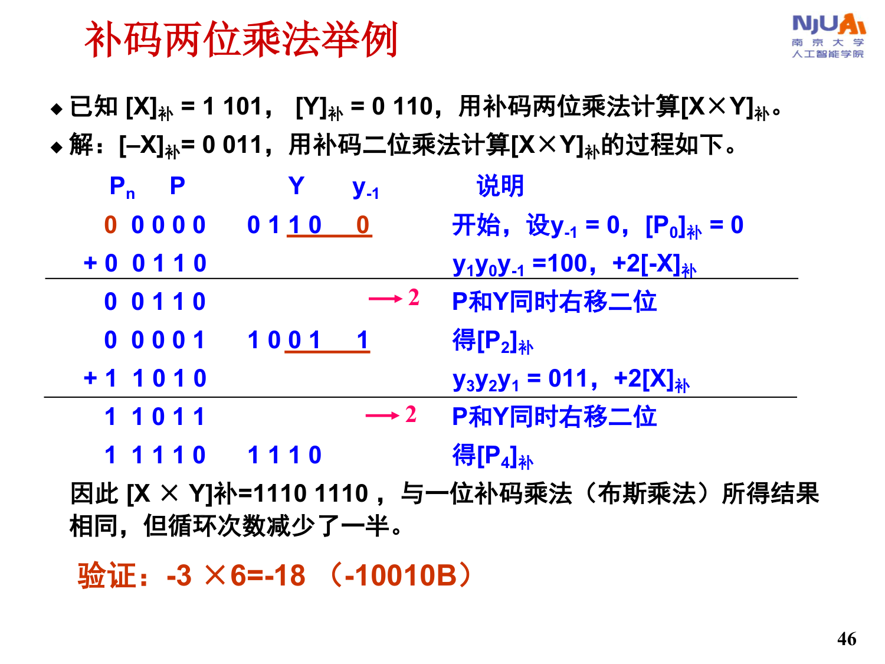
同 p44 的题：[X]补=1101，[Y]补=0110，用两位乘做
预备：[−X]补 = 0011。注意现在 P 多了一个附加符号位（共 5 位），写作 P_n P P P P 形式。
逐步演算
初始：附加位+P = 0 0000，Y = 0110，y₋₁ = 0。
第 1 轮
看 y₁ y₀ y₋₁ = 1 0 0。查表（参考 p45）：100 → +2[−X]补。
0 0000 + 0 0110 (因为 2·[−X]补 = 2·0011 = 0110) ———————————— 0 0110
然后 P 和 Y 一起算术右移 2 位：
P 的低 2 位 10 移到 Y 最高 2 位，Y 的最低 2 位 10 被丢（但其中一位变成新的 y₋₁）。
P = 0 0001 Y = 1001 y₋₁ = 1 即 [P₂]补
第 2 轮
看 y₃ y₂ y₁ = 0 1 1（注意：是 Y 当前的高 3 位，因为 P 和 Y 已经右移过 2 位）。
011 → +2[X]补 = +2·1101 = 1 1010（用 5 位带符号表示）
0 0001 + 1 1010 ———————————— 1 1011
算术右移 2 位（注意现在 P 是负数，最高位 1，右移时左边补 1）：
P = 1 1110 Y = 1110 y₋₁ = (上次 Y 的某位) 即 [P₄]补
结果验证
[X×Y]补 = P 拼 Y = 1110 1110（去掉附加符号位）= −18 ✓
和 p44 一位 Booth 的结果完全一致，但只用了 2 次循环（一位乘需要 4 次）。
注意附加符号位的重要性：第 2 轮加法后 P =
1 1011，5 位的最高位 1 表示"这是个负数"。如果没有附加位、只用 4 位，那 1011 既可能是 −5 也可能是+11 的某种状态，右移时根本不知道该补 1 还是 0。快速乘法器：为什么还要继续优化
到目前为止的乘法器有啥问题
不管一位乘还是两位乘，都是一个加法器反复用，靠时钟节拍控制。本质是串行方案：
- 一位乘：约 n 个时钟周期
- 两位乘：约 n/2 个时钟周期
对 32 位乘法，就算两位乘也要 16 个周期。现代 CPU 流水线一个时钟想做完一条乘法指令，这显然不够快。
为啥乘法值得专门提速
PPT 说"大约 1/3 是乘法运算"——这是典型程序中乘法在所有算术运算里的占比。一个常用部件慢一倍，全机性能就直接拉低。所以工业上几乎所有 CPU 都给乘法配了专门的硬件部件，不和 ALU 共享加法器。
两条思路
- 流水线方式：把"加 + 移"展开成 n 级，每级一个 n 位加法器，让多对操作数同时在不同级流动（像汽车装配线）。一条乘法仍然要走 n 级，但平均每个时钟周期能出一个结果（吞吐率高）。
- 硬件叠加方式（如阵列乘法器）：把所有部分积都一次性算出来，用一棵全加器树同时累加。整个乘法在组合电路里一次完成，不需要时钟，延迟 = 门级延迟链。
两种思路的共同点：用更多的硬件面积换更短的延迟。这是硬件设计的永恒主题。
三种乘法器：用空间换时间
对比表（背下来）
| 方案 | 结构 | 一次乘法用时 | 吞吐率 | 硬件成本 |
|---|---|---|---|---|
| 串行乘法器（前面讲的） | 1 个加法器 + 寄存器 + 控制 | n 周期 | 1/n | 低 |
| 流水线乘法器 | n 个加法器，串成 n 级 | n 周期（但延迟可被流水线填满） | ≈1（每周期出一个） | 中 |
| 阵列乘法器 | n×n 个全加器，组合电路 | ~2n 门延迟（无时钟） | ~1 | 高 |
流水线 vs 阵列的关键区别
流水线乘法器：仍然有时钟，每级是时序电路。好处是相邻乘法可以"挤"在流水线里同时跑（指令并行）。坏处是单条乘法的延迟没缩短，只是吞吐率上去了。
阵列乘法器：纯组合电路，没有时钟，信号从输入端进去后一路通过所有全加器就出结果。好处是单条乘法延迟最短。坏处是面积巨大（n² 个全加器），而且无法被其他乘法复用（一台机器跑完一条乘法才能跑下一条）。
实际 CPU 怎么选
大多数现代通用 CPU 用流水线乘法器 + Booth 编码组合：
- 用 Booth（一位或两位、甚至基-4、基-8）减少部分积数量
- 用 Wallace 树（一种全加器树）把所有部分积同时压成 2 个数（"和"+"进位")
- 最后用一个快速加法器（如 CLA）把这 2 个数加起来
- 整体用流水线分级
这套组合既快（吞吐 = 1 周期一条）又省（不到纯阵列的 1/2 面积）。
· 流水线：每级加法器后面接寄存器（图上每个加法器输出有"1 bit"标注，那是寄存器锁存），相邻级之间用时钟同步。
· 阵列：所有全加器直接连，没有锁存，是纯组合电路。
看图的时候盯有没有"小方块代表的寄存器"是分辨二者的关键。
流水线方式快速乘法器
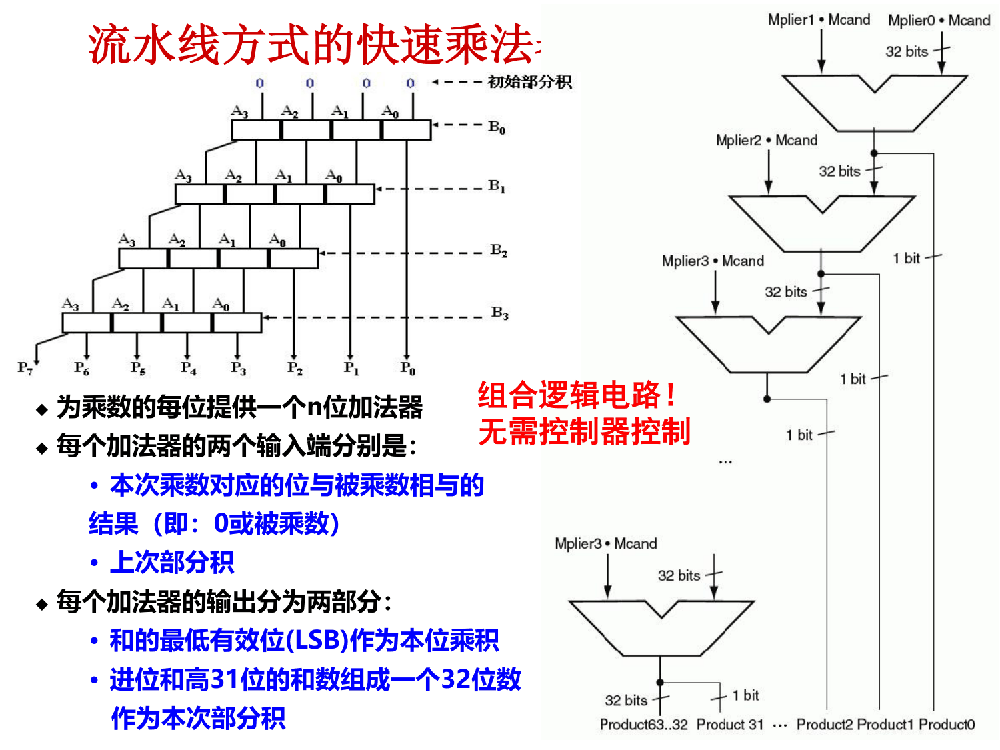
右边那张图怎么读（自上而下）
每一层都长得一样：梯形 = n 位加法器，左输入接 Mplierᵢ · Mcand（这一位的部分积，是"乘数第 i 位 AND 被乘数"，结果要么全 0、要么是 X 本身），右输入接上一级输出的部分积。每一层下面还有"1 bit"——这就是从加法器输出锁存的本位乘积位。
每级加法器干嘛
- 输入：上次部分积（n 位）+ 本次的 yᵢ·X（n 位）
- 加法：得到 n+1 位的和（多出 1 位是进位）
- 输出拆成两部分：
- 和的最低位 (LSB) → 这就是最终乘积的第 i 位，被锁存输出（图右下角的 Product_i）
- 剩下的进位 + 高 31 位（共 32 位）→ 作为下一级的"上次部分积"
为啥 LSB 可以直接输出
因为之后的循环里，本次部分积都要右移（或者等价地说，新加进来的 yᵢ₊₁·X 是更高一位的）。本次 LSB 之后不会再被加到了，所以可以提前"出栈"作为乘积的对应位。这就是 p35 改进②"部分积右移"在流水线视角下的表现——不是真的去移，而是把不再用的低位提前抠出来。
n 级 = n 位乘数处理完
n 位乘数有 n 位，每位对应一级加法器。第 n 级出来的"剩余部分积"（高 32 位）拼上每级抠出的 1 位 LSB（共 n 位），合起来就是 2n 位的乘积（Product_0 到 Product_{2n-1}）。
"组合逻辑电路！无需控制器控制"
PPT 蓝字这句话有点歧义。如果每级之间没有锁存器，那确实是纯组合，效果等于阵列乘法器（p49）。如果每级中间有锁存，那才是流水线，需要时钟但不需要复杂的状态机控制。课件这里画的版本看起来是没有锁存的版本，等价于阵列乘法器的"线性"画法（p49 那个二维菱形是同一个东西的另一种排版）。
阵列乘法器
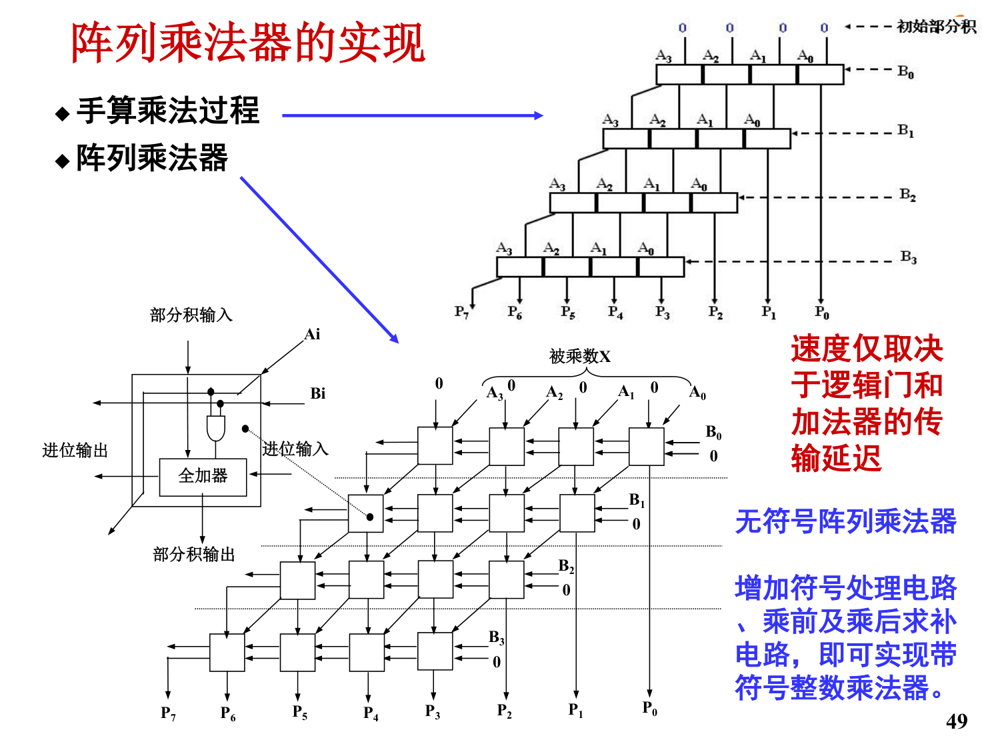
左下那张图是这个阵列的"一个单元"
每个小方块包含：
- 一个与门（图中"半圆+点"那个符号）：算 Aᵢ · Bⱼ —— 也就是被乘数的第 i 位 AND 乘数的第 j 位，得到一个部分积位。
- 一个全加器：把这个部分积位 + 上方传下来的"上一行部分积" + 左侧传来的"进位"三者相加，输出本位部分积（向下传）和进位（向右传）。
大图的二维阵列：n×n 个这样的单元
4×4 阵列乘法器（图上画的就是 4 位 × 4 位）：
- 顶部输入：被乘数 X = A₃A₂A₁A₀（垂直流下来）
- 右侧输入：乘数 Y = B₃B₂B₁B₀（水平注入每一行）
- 底部输出：乘积 P₇P₆P₅P₄P₃P₂P₁P₀
每一行处理乘数的一位。第 j 行计算"X·Bⱼ"并加到运行中的部分积上。所有部分积按错位累加，最终在底部得到完整 2n 位结果。
性能特点
PPT 右上："速度仅取决于逻辑门和加法器的传输延迟"——因为没有时钟、没有控制状态机，输入一稳定，整个阵列里的信号从左上角传播到右下角，到达 2n−1 级门延迟左右就稳定输出。
带符号阵列乘法器
上面讲的是无符号。带符号怎么办？两条路：
- 乘前求绝对值、乘后调符号：先把负操作数变成正的（求补），用无符号阵列乘，最后根据"两数符号异或"决定结果符号（必要时再求补）。PPT 右下角说的就是这套：增加符号处理电路 + 乘前/乘后求补电路。
- 用 Baugh-Wooley 算法：直接对补码做阵列乘法（不在本课范围）。
n 位 × n 位 = 2n 位：高低位都意味着什么
为什么是 2n 位
两个最大的 n 位无符号数相乘：(2ⁿ − 1)² = 2²ⁿ − 2·2ⁿ + 1，不到 2²ⁿ。所以乘积总能塞进 2n 位。比如 8 位 × 8 位 ≤ 255² = 65025，正好 16 位以内。
2n 位结果的"高 n 位"和"低 n 位"
把乘积 P 写成 P = P_high · 2ⁿ + P_low：
- P_low（低 n 位）：模 2ⁿ 的结果。如果 C 程序里 z 也声明为 n 位，编译器存到 z 的就是 P_low。
- P_high（高 n 位）：包含"商"信息——可以理解为 P 超过 n 位部分。这部分平时存在另一个寄存器里，普通乘法指令不一定取，但用来判溢出非常关键。
溢出 = "高 n 位"含信息
如果 C 程序 int z = x * y; 只保留 n 位结果，那么"高 n 位是否能从低 n 位推出来"就是判溢出的标准：
- 无符号：高 n 位应该全 0（结果在 [0, 2ⁿ) 内）。一旦高 n 位有 1 → 溢出。
- 带符号：结果应该在 [−2ⁿ⁻¹, 2ⁿ⁻¹) 内。换言之，2n 位结果"符号扩展回 n 位"不能丢信息——即高 n 位每一位都应该等于低 n 位的最高位（全 0 或全 1，且与低位符号一致）。
两个常用结论（后面要反复用）
- 低 n 位结果，无符号和带符号一样：因为不管把输入解读成无符号还是带符号，乘法的位运算过程完全相同，最低 n 位的位串是同一个东西。所以 RISC-V 的
mul指令不分"无符号 / 带符号"。 - 高 n 位不一样：高 n 位才是真正反映"按哪种解读乘出来"的部分。所以 RISC-V 有两条不同的指令
mulh（带符号）和mulhu（无符号）。
p50 那张图就是把"低 n 位相同、高 n 位不同"这件事画出来。
整数乘运算：无符号 vs 带符号
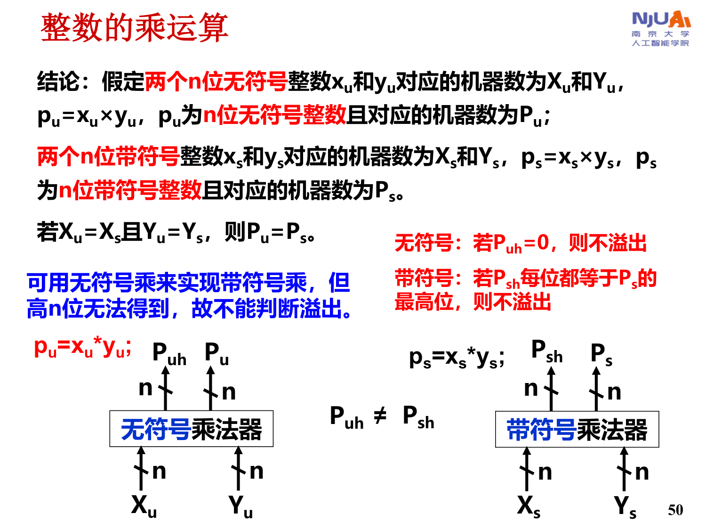
这页用形式化语言重申一遍背景页的结论
设两组数：
- 无符号：xᵤ, yᵤ（机器数 Xᵤ, Yᵤ），积 pᵤ = xᵤ × yᵤ，存机器数 Pᵤ（n 位）
- 带符号：xₛ, yₛ（机器数 Xₛ, Yₛ），积 pₛ = xₛ × yₛ，存机器数 Pₛ（n 位）
关键结论：如果 Xᵤ = Xₛ 且 Yᵤ = Yₛ，则 Pᵤ = Pₛ。也就是说两种解读下机器数低 n 位相同。
但高 n 位不同：Pᵤh ≠ Pₛh
所以图里画了两个不同的乘法器——无符号乘法器和带符号乘法器——每个都输出 (Phigh, Plow)，低位一样、高位不一样。
mul / mulhu / mulh 选择不同的输出（或者在阵列外侧加符号扩展逻辑）。这就是 RISC-V 三条乘法指令实际共用底层硬件的设计基础。页面右下两句话
- 无符号：若 Pᵤh = 0，则不溢出。直觉：高位有 1 意味着结果 ≥ 2ⁿ，n 位塞不下。
- 带符号：若 Pₛh 每位都等于 Pₛ 的最高位，则不溢出。这是"符号扩展"的反向验证：如果 2n 位结果能"压回" n 位（高 n 位是符号扩展），那 n 位足够；否则真值要么太大、要么太小。
PPT 左下蓝字："可用无符号乘来实现带符号乘，但高 n 位无法得到，故不能判断溢出"——这是一个很重要的工程观察：
低 n 位用无符号乘法器算出来就对了（按上面的结论）；但溢出判断需要高 n 位的带符号解读，必须用真正的带符号乘法器（或 mulh 这类专用指令）。
溢出判断规则 + 数值表
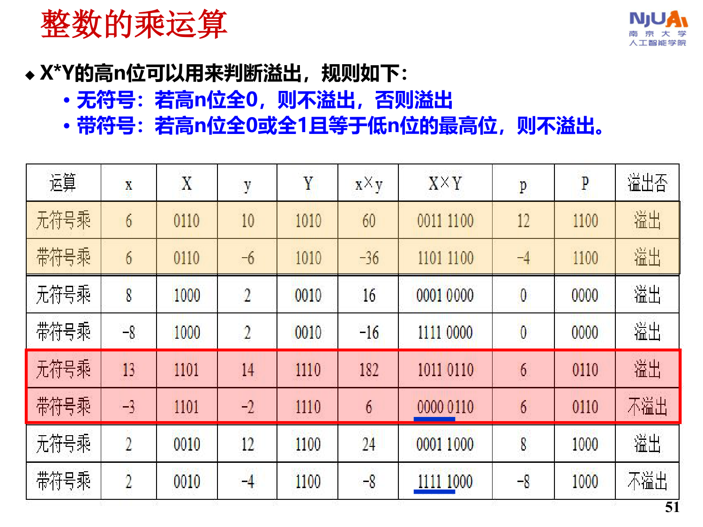
规则正式版（背下来）
- 无符号溢出：乘积的高 n 位非 0 → 溢出
- 带符号溢出：乘积高 n 位的每一位都相同、且都等于低 n 位的最高位 → 不溢出；否则溢出
逐行读表（这张表是这一节的核心案例库）
把表里关键行翻译一下（注意 4 位 × 4 位，结果是 8 位）：
| 解读 | x | X (4 位) | y | Y | x×y | X×Y (8 位) | 低 4 位 p | 溢出？ |
|---|---|---|---|---|---|---|---|---|
| 无符号 | 6 | 0110 | 10 | 1010 | 60 | 0011 1100 | 12 (1100) | 溢出（高 4 位 0011 ≠ 0） |
| 带符号 | 6 | 0110 | −6 | 1010 | −36 | 1101 1100 | −4 (1100) | 溢出（高 4 位 1101 ≠ 全 1） |
| 无符号 | 13 | 1101 | 14 | 1110 | 182 | 1011 0110 | 6 | 溢出（高 4 位 1011 ≠ 0） |
| 带符号 | −3 | 1101 | −2 | 1110 | 6 | 0000 0110 | 6 | 不溢出（高 4 位 0000，低位最高位 0，相等） |
看最后两行（PPT 红框那一组）
这是整个这一节最重要的观察：
- 13×14（无符号）和 −3×−2（带符号）输入机器数完全一样（X=1101, Y=1110）
- 低 4 位结果也一样（都是 0110 = 6 / −4？看带符号读 0110 = 6，无符号读 0110 = 6，对，巧合数值都是 6）
- 但高 4 位完全不同：无符号高位 1011（182 的高位）vs 带符号高位 0000（6 的高位）
- 结果：同一份输入机器数，按哪种解读就有不同的"是否溢出"
int z = x*y 和 unsigned z = x*y 即使 x、y 位串一样，溢出标志判定也不一样——所以编译器必须按声明的类型选对应的判溢规则。x² ≥ 0 吗？（C 语言里不一定！）
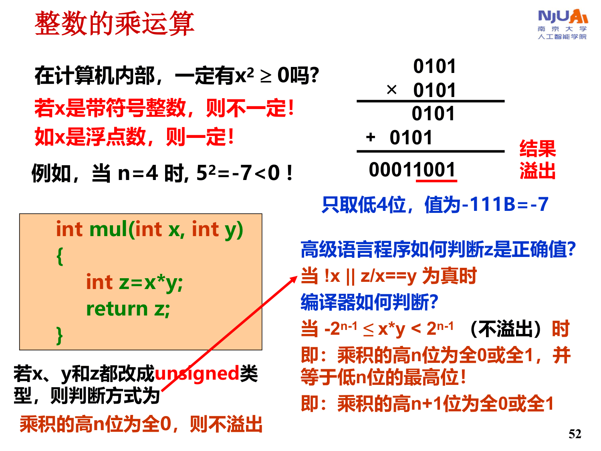
反直觉的事实
数学上 x² ≥ 0 永远成立。但 C 程序里不一定。看例子：n=4，x = 5（带符号 4 位最大正值是 7，所以 5 还可表示，编码 0101）。
0 1 0 1
× 0 1 0 1
————————————
0 1 0 1
0 0 0 0
0 1 0 1
0 0 0 0
————————————
0 0 0 1 1 0 0 1 = 25 (8 位)
截到低 4 位 = 1001。按带符号读 = −7。所以 (int4_t)5 * (int4_t)5 == -7！
PPT 上的"取低 4 位的值为 −111B = −7"就是这意思（-111B 是 −0b111 = −7 的中式记法）。
页面左下 C 程序：int z = x*y，怎么判 z 是否正确？
PPT 给的高级语言层判法：!x || z/x == y 为真时不溢出。
!x：x 是 0，那 z 一定是 0，不可能溢出z/x == y：把乘法用除法"反推"一遍，如果反推得到原本的 y，说明乘法没丢信息
这是程序员能写的检测方法，纯软件，不依赖硬件标志。代价是多一条除法（除法很慢）。
页面右下：编译器层面怎么判
把2n 位完整乘积算出来（用 mul + mulh 这种指令）：
- 无符号：高 n 位全 0 → 不溢出
- 带符号：2n 位结果 高 n+1 位全 0 或全 1 → 不溢出（等价说法：高 n 位每位都等于低 n 位的最高位）
p51 那条规则"高 n 位每位等于低 n 位的最高位"等价于"高 n+1 位全相同"，两种说法一致。
三种 ISA 的乘法指令
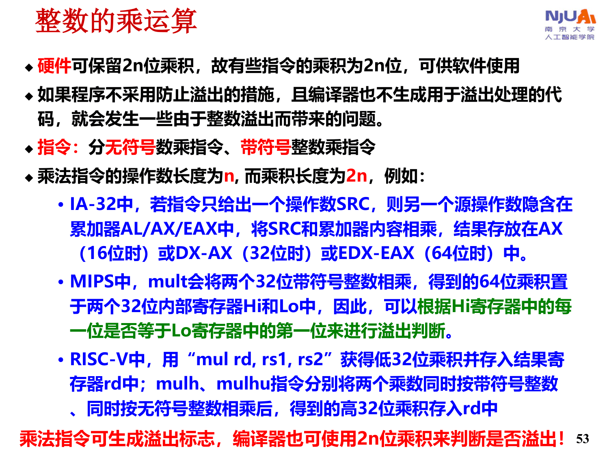
硬件上 2n 位乘积是天然有的；问题是ISA 怎么把它暴露给程序员。三种主流做法：
IA-32（x86 32 位）
指令：mul SRC（无符号）/ imul SRC（带符号）。"一个操作数 SRC 显式给出，另一个隐含在累加器里"。结果按字长存到不同寄存器对：
| 字长 | 隐含源 | 结果存放 |
|---|---|---|
| 16 位 | AX | DX:AX（32 位拼成） |
| 32 位 | EAX | EDX:EAX |
| 64 位 | RAX | RDX:RAX |
溢出后 CF 和 OF 标志置位，应用程序自己检查。
MIPS
指令：mult rs, rt（带符号）/ multu rs, rt（无符号）。结果固定存到两个专用寄存器 Hi / Lo（高 32 / 低 32），用 mfhi / mflo 指令取出。
溢出判断：检查 Hi 里每一位是否等于 Lo 的最高位（套 p51 的规则）。
RISC-V（最干净的设计）
三条指令把结果的高低半分开：
mul rd, rs1, rs2：得到积的低 32 位。注意：因为低 32 位无符号 / 带符号一样（背景页结论），所以这条指令不分有无符号。mulh rd, rs1, rs2：得到带符号乘积的高 32 位mulhu rd, rs1, rs2：得到无符号乘积的高 32 位- （还有
mulhsu：一个带符号一个无符号，混合乘）
这也是为什么 p55 答案的 RISC-V 代码会先
mul 再 mulh——拿齐高低两半才能判溢出。思考题：写一个 imul_overflow 函数
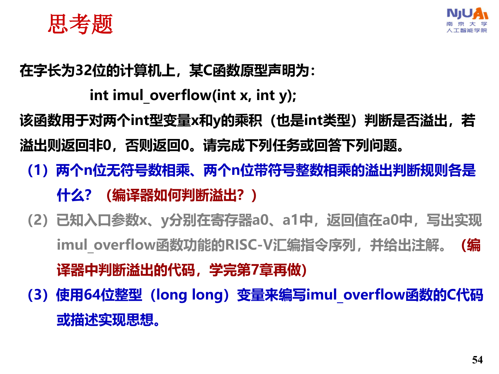
题面
int imul_overflow(int x, int y); // 判断 x*y（int 类型）是否溢出 // 溢出返回非 0，否则返回 0
三个子任务
- 说出无符号 / 带符号乘法的溢出判断规则（回顾 p51）
- 用 RISC-V 汇编写出实现（PPT 注：要等到第 7 章学完才能完整写）
- 用 C 语言的 long long 实现（取巧法）
解题思路提示
任务 (1) 直接背规则。
任务 (2) 是 RISC-V 汇编实操，需要会 mul + mulh 这两条指令的配合（取齐高低位）+ 比较高位和低位的最高位是否一致。具体见 p55。
任务 (3) 借助比 int 更宽的 long long（一般 64 位）"无损"地做乘法，然后看结果是否能塞回 int。具体见 p56。
很多 C 程序员一辈子没意识到
int x*y 可能溢出，写出潜在 bug。这一节就是要让你脱离这个无知状态。思考题答案 (1)(2)
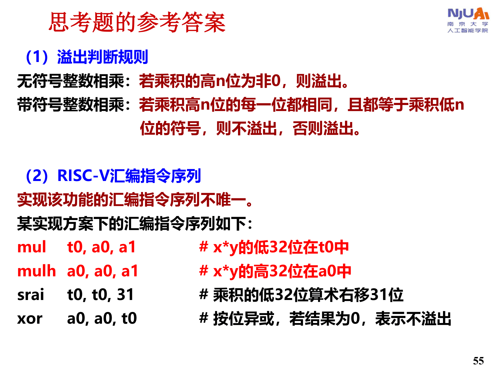
(1) 规则再写一遍（PPT 用的措辞略不同，但等价）
- 无符号：乘积高 n 位非 0 → 溢出
- 带符号：乘积高 n 位每一位都相同 + 都等于低 n 位的符号位（最高位）→ 不溢出，否则溢出
(2) RISC-V 汇编实现
mul t0, a0, a1 # t0 = (x * y) 的低 32 位 mulh a0, a0, a1 # a0 = (x * y) 的高 32 位（带符号） srai t0, t0, 31 # t0 算术右移 31 位 → 全 0 或全 1 xor a0, a0, t0 # a0 ^= t0；若两者相同则 a0 = 0（不溢出）
每一句在干嘛（详细拆）
mul t0, a0, a1：把 x*y 的低 32 位放到 t0。这一步同时覆盖了不需要的部分，但 a0、a1 还在。
等等，a0 是 x 的入参寄存器，被复用做返回值。这里先把低 32 位拿到 t0，下一步要覆盖 a0 了。mulh a0, a0, a1：把 x*y 的高 32 位（带符号解读）放到 a0。关键：先做 mul 再做 mulh，因为 mulh 要用 a0 和 a1 作输入，会读取它们的原值。a0 在 mulh 之后才被改写，所以这两条指令的顺序很关键。srai t0, t0, 31：把低 32 位算术右移 31 位，结果只剩"符号扩展"——若低位是负数（最高位 1），t0 变成全 1（0xFFFFFFFF）；否则变成全 0。
这一步在制造"低 32 位的符号位重复 32 次"这个值，用来和真正的高 32 位（a0）对比。xor a0, a0, t0：异或。若高 32 位（a0）正好等于"低位符号扩展"（t0），异或 = 0 → 不溢出。否则 a0 中有 1 位 → 非 0 → 溢出。
返回值就在 a0 里，0 表示不溢出、非 0 表示溢出，与题目契合。
四条指令完成整个判断，不需要分支、不需要循环，可以塞进流水线一拍完成。这就是为什么编译器爱这种位运算 trick。
思考题答案 (3)：用 long long 取巧
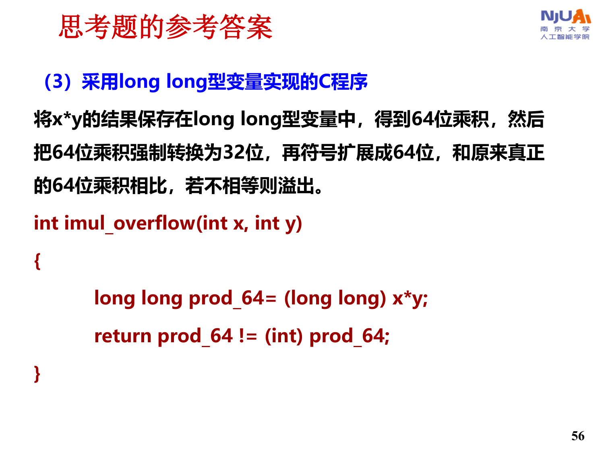
代码
int imul_overflow(int x, int y) {
long long prod_64 = (long long) x * y;
return prod_64 != (int) prod_64;
}
分析每一步
(long long) x：把 x 强制提升到 64 位带符号（符号扩展）。
这一步关键！否则x * y会按 int × int 计算，结果还是 32 位，乘法已经溢出了，再赋给 long long 是"亡羊补牢"，丢了的高位回不来。- 因为 x 已经是 long long，y 会被隐式提升为 long long（C 的算术转换规则），然后做 64 位 × 64 位（只用低 32 位有效）→ 结果是真正的 64 位带符号乘积，不会溢出（32×32 → 64 永远塞得下）。
(int) prod_64：把 64 位结果截到低 32 位。这模拟了"原本 C 程序里 int 乘法发生的事"。prod_64 != (int) prod_64：左边是真值（64 位），右边是被截断的版本（再隐式扩展回 64 位时用符号扩展）。若两者相等，说明截断没丢信息 → 不溢出；若不等 → 截断丢信息 → 溢出。
这个写法的核心 trick
用更宽的整型当"参照系"——硬件配合编译器，把 32 位乘法在 64 位空间里跑一遍，对比"截断前后"是否丢东西。这是高级语言里最自然的溢出检测套路，许多编译器内置 __builtin_mul_overflow 等内建函数都是基于这种思路实现。
long long prod = x * y;（漏了强制转换）这里
x * y 先按 int 算，溢出后再赋给 long long，已经无法救回。一定要在乘之前就把至少一个操作数转成 long long。
关于乘法的几个开放问题
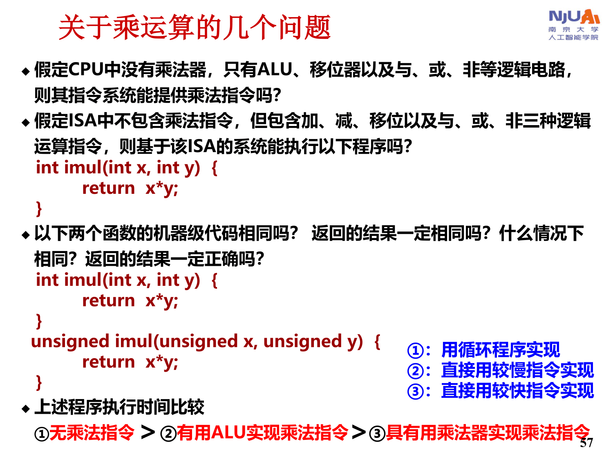
问题 1：CPU 没乘法器，只有 ALU + 移位 + 与/或/非，能不能提供乘法指令？
能。这正是 p35–p37 那套串行乘法器的方案——用 ALU 反复做"加+移"。这种 CPU 的乘法指令存在，但执行慢（要 n 个周期），靠微程序或硬连线状态机控制。早期的 8086、6502 就是这样。
问题 2：ISA 里没乘法指令，但有加、减、移位、逻辑，能不能执行 x*y 的 C 程序？
能。编译器会把 x*y 翻译成一个循环（移位 + 条件加，软件版的串行乘法），效率比硬件乘法慢很多但功能等价。这正是有些极简嵌入式 ISA（早期 ARM Thumb 的某些子集）的处理方式。
问题 3：下面两个函数
int imul(int x, int y) { return x*y; }
unsigned imul(unsigned x, unsigned y) { return x*y; }
问：机器代码相同吗？返回结果一定相同吗？什么情况下相同？
机器代码是否相同？
相同。因为编译器只会用一条 mul 指令（取低 32 位），而 mul 不分有无符号——低 n 位结果无符号 / 带符号一样（背景页结论）。
不过实际编译器可能会因为函数签名而生成不同的"调用约定"代码（比如返回值的符号扩展、寄存器保存等），核心乘法指令是一样的。
返回结果是否一定相同？
不一定。位串相同但解读不同：
- 不溢出时：两者返回的整数值相同（都正确）
- 溢出时：低 32 位位串相同，但 int 读出来可能是负数、unsigned 读出来是大正数 → 调用者看到的"值"不同
不溢出时结果一定相同。这是这一节最重要的观察的应用。
页面底部的三种性能层级（PPT 蓝字 ①②③）
同样要在 C 里算 x*y，三种实现方式的执行时间：
- ① ISA 里没有乘法指令：编译器生成循环代码（软件乘法），最慢
- ② ISA 有乘法指令、但靠 ALU 实现（前面说的串行乘法器），中等
- ③ ISA 有乘法指令、用专门快速乘法器实现（阵列 / 流水线），最快
不等式：① > ② > ③（执行时间从大到小）。
—— 第二讲 Booth & 快速乘法器（p43-57）结束 ——
第二讲目录（指向除法）
从十进制手工除法说起
回忆小学的"长除法"
算 142 ÷ 6 时你是怎么做的？
___2_3___
6 ) 1 4 2
-1 2 ← 6×2，够减，商 2
——
2 2
-1 8 ← 6×3，够减，商 3
——
4 ← 余数
三步走：① 从被除数最高几位开始，看够不够减除数；② 够减 → 上商 + 减；不够 → 上商 0，"下放"下一位数字；③ 重复到被除数处理完。
二进制除法更简单
因为二进制每位的商只能是 0 或 1，所以"试商"退化成"够不够减"一个判断：
- 够减 → 商 1，写下"被除数 − 除数"作为新的中间余数
- 不够减 → 商 0，被除数不动
然后向左下方挪一位继续。和乘法一样，二进制除法不需要真正的"乘"或"除"，只用减法 + 移位 + 一个判断就能完成。
· 乘法：从乘数最低位开始，部分积右移累加；
· 除法：从被除数最高位开始，中间余数左移逐次减除数。
后面会看到，两者用同一套硬件骨架（ALU + 移位器 + 寄存器组）就能实现。
除法（Divide）：Paper & Pencil
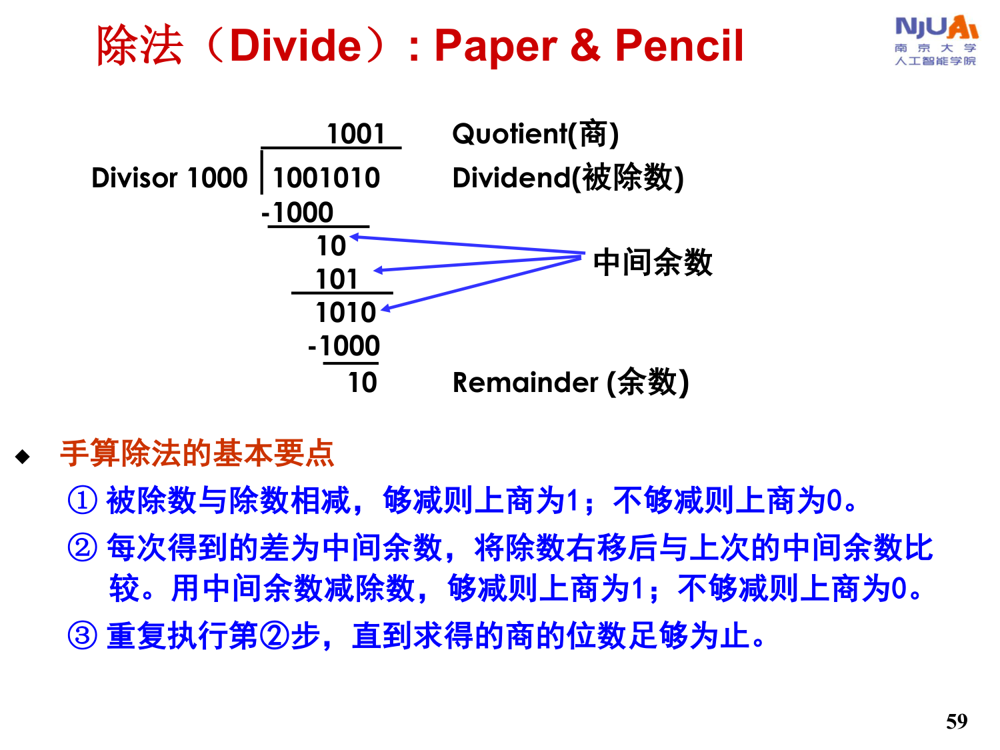
这页就是把上面背景页的二进制版列出来
例子：1001010 ÷ 1000（十进制 74 ÷ 8 = 9 余 2）
1 0 0 1 ← 商 (Quotient)
1 0 0 0 ) 1 0 0 1 0 1 0
-1 0 0 0 ← 第 1 步：1001 ≥ 1000，够减，商 1
————
0 0 1 0 ← 中间余数 10，不够 1000，商 0
1 0 1 ← 再下放一位 → 101，仍不够，商 0
1 0 1 0 ← 再下放一位 → 1010，够减
-1 0 0 0 ← 第 4 步：1010 − 1000，商 1
————
1 0 ← 余数 (Remainder) = 2 ✓
PPT 总结的三条规则
- 被除数（或中间余数）减除数，够减上商 1，不够减上商 0
- 每次相减得到的差作为中间余数；除数相对中间余数右移一位（等价地，让中间余数左移一位跟原地的除数比）继续减
- 重复，直到商位数足够
商位的获得顺序
注意：商位是从最高位（MSB）到最低位（LSB）逐次得出。这和乘法（从 LSB 到 MSB 累加部分积）方向相反。所以后面硬件里，商位要"左移进 Q 寄存器"，而不是右移。
定点除法 — 除前预处理
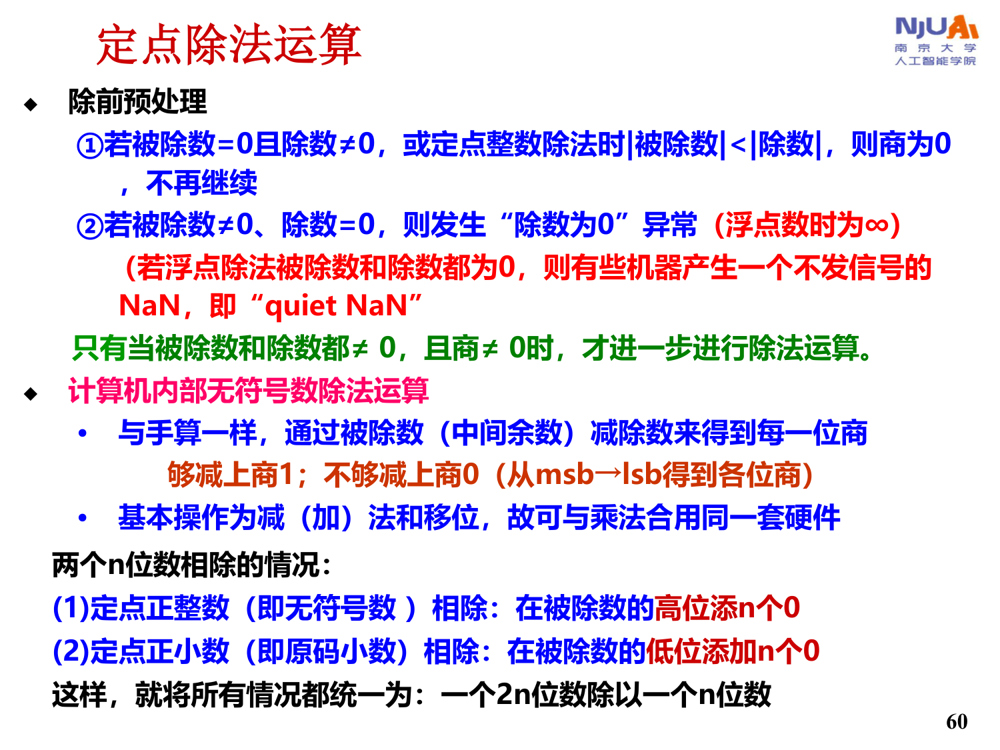
三种"开打前就该处理"的异常
- 被除数 = 0 且除数 ≠ 0：直接商 0，不做后续运算
- 整数除法时 |被除数| < |除数|：商必然是 0，余数 = 被除数，直接返回
- 除数 = 0：抛"除数为 0"异常；浮点中产生 ±∞；如果浮点的被除数也是 0，产生 "quiet NaN"
只有当上面三种都不发生时，才进入真正的除法循环。
无符号除法的硬件思路
核心操作和手算一样：试减 → 够则商 1 → 不够则商 0。商位从 MSB 到 LSB 逐次得出。基本电路：减法器（ALU）+ 移位器，和乘法器共用同一套硬件。
"两个 n 位数相除"的两种统一
PPT 最后那段很关键。除法的标准接口是"2n 位 ÷ n 位"——但你写 C 代码 int z = x/y; 两个操作数都是 n 位。如何把"n 位 ÷ n 位"映射到这个标准接口？两种情况要分开补 0：
- 整数除法：被除数的高位补 n 个 0（变成 2n 位），低位不动
- 例：8 位 x = 0000 0111 → 16 位的 0000 0000 0000 0111 ÷ 8 位 y
- 原码小数除法（浮点尾数）：被除数的低位补 n 个 0
- 例：4 位小数 .1011 → .1011 0000 ÷ 4 位
结果：所有除法在硬件层面统一为"2n 位 ÷ n 位 → n 位商 + n 位余数"这一种接口。
除法的"溢出"是什么意思
加减乘的溢出 vs 除法的溢出
到现在为止你看到的"溢出"都是结果超过 n 位能表示的范围：
- 加减：结果 ≥ 2ⁿ⁻¹ 或 < −2ⁿ⁻¹（带符号 n 位）
- 乘法：n×n=2n 位，高 n 位不为"符号扩展"
除法的溢出含义类似，但具体判据特别：商位数 > n 位。也就是说，做"2n 位 ÷ n 位"时，商一旦超过 n 位就装不下了。
什么时候商会超过 n 位？
2n 位 ÷ n 位的商最大可达 2ⁿ⁺¹ − 1（n+1 位）。比如 4 位除 4 位（看作 8 位 ÷ 4 位的特例）：
1111 1111 / 1111 = 1 0001（5 位的商，超过 4 位）
判定方法：第一次试减（最高位试商）就够减 → 商的最高位已经是 1，再加上后面的 n 位 → 共 n+1 位 → 溢出。这就是 p61 那条规则。
"n 位 ÷ n 位"为什么不会溢出
按 p60 的约定，n 位除以 n 位时被除数高位补 0 扩成 2n 位，第一次试商必然得到 0（因为高 n 位都是 0，肯定不够 n 位除数的"满位减"）。所以商最多 n 位，永远不溢出。
浮点的特殊情况
浮点尾数（原码小数）"第一次试商为 1" 不是溢出，反而是常态——因为尾数定义为 0.1xxxx... 形式，被除数小数点对齐时第一次相减必然有效。这种情况下硬件要保留这个 1，并通过"右规"（小数点右移、阶码调整）处理。p61 把整数情形和浮点情形对照讲。
第一次试商为 1 → 溢出
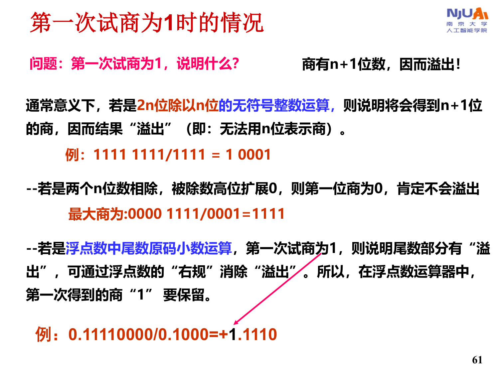
规则正式版
对 2n 位 ÷ n 位 的无符号整数除法：
- 第一次试商为 1 → 商有 n+1 位 → 溢出
- 第一次试商为 0 → 商最多 n 位 → 不溢出
溢出实例
1111 1111 / 1111 = 1 0001
验证：255 ÷ 15 = 17，二进制 17 = 10001 共 5 位 → 4 位寄存器装不下。这种情况硬件会拉起溢出标志。
反例：n 位 ÷ n 位不会溢出
按 p60 约定补 0 后：
最大商 = 0000 1111 / 0001 = 1111（4 位，刚好满）
因为被除数高 4 位都是 0，第一次"高 4 位试减 0001"不够减，商 0；最大也只能再产生 4 位有效商。所以 C 程序里 int z = x / y; 两个 n 位输入永远不会因为"商太大"而溢出。
INT_MIN / -1。因为 INT_MIN = −2³¹，结果应是 +2³¹，但 int 最大只到 2³¹−1，正溢出 1 单位。这是 C 标准里的未定义行为，许多 CPU 会抛硬件异常。RISC-V 不抛，它直接返回 INT_MIN（实现定义）——见 p77。
浮点的情况（PPT 那个例子）
0.1111 0000 / 0.1000 = +1.1110
第一次试商为 1（因为 0.1111 ≥ 0.1000），但这不是错。结果是 1.111 大于 1，浮点会通过"右规"——尾数右移 1 位 + 阶码 +1——把它变回标准的"0.1xxx"形式。所以浮点尾数除法第一次的"1"要保留，作为后续右规的依据。
除法硬件 vs 乘法硬件：对称美
一张对比表
| 乘法 | 除法 | |
|---|---|---|
| 输入 | n 位 × n 位 | 2n 位 ÷ n 位 |
| 输出 | 2n 位积 | n 位商 + n 位余 |
| 核心循环 | 判加不加 X、然后右移 | 试减 Y、根据结果决定上商和恢复 |
| 部分积/余数移动 | 右移 | 左移 |
| 从哪头处理操作数 | 乘数 LSB 起 | 被除数 MSB 起 |
| 商/积写入顺序 | 积位从 LSB 到 MSB 累加 | 商位从 MSB 到 LSB 拼接 |
| 硬件核心 | ALU + 移位器 + Y/X/P/C/Cn | ALU + 移位器 + Y/R/Q/Cn |
共用的硬件骨架
两者的寄存器布局几乎一样：
- 乘法：X 寄存器放被乘数，{P,Y} 拼成 64 位整体右移
- 除法：Y 寄存器放除数，{R,Q} 拼成 64 位整体左移
都用同一个 ALU（乘法做加、除法做减）、同一个移位器（方向可控）、同一个计数器。
所以现代 CPU 里乘除指令通常共享一个"乘除部件"，靠控制信号切换工作模式。AM2901A（p79）就是这种设计的代表。
· 乘法的"部分积 + X 累加" ↔ 除法的"中间余数 − Y 试减"
· 乘法的"右移把已算出的低位推到 Y 中" ↔ 除法的"左移把已算出的高位推到 Q 中"
把这两点对照记，p62 那张图就一眼看懂。
无符号除法硬件实现
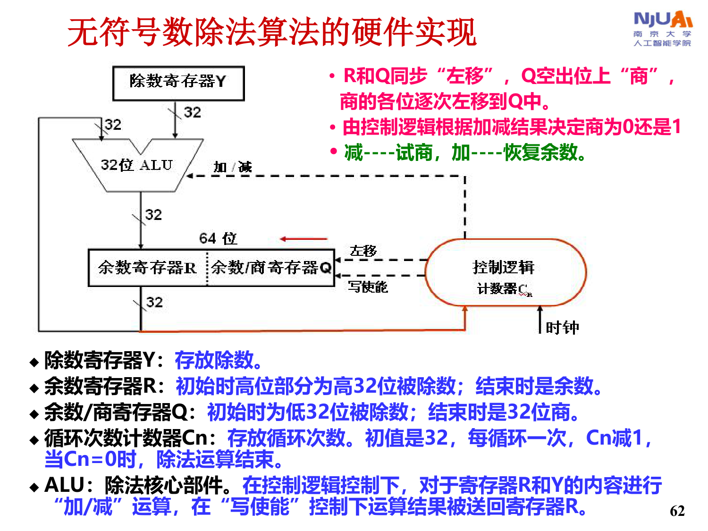
四个寄存器（对比乘法的五个）
- Y（除数寄存器）：32 位，整个过程不动。
- R（余数寄存器）：32 位，初始装被除数的高 32 位（n 位除 n 位时初始为 0）；结束时装余数。
- Q（余数/商寄存器）：32 位，初始装被除数的低 32 位；结束时装商。每次循环 Q 的最低位接收新算出的商位。
- Cₙ（计数器）：初值 32，每循环减 1，归 0 停。
每个周期发生什么
- {R, Q} 整体左移 1 位：R 的最高位丢弃（其实存到一个临时位），Q 的最高位移到 R 的最低位，Q 的最低位空出来等接收新商位。
- ALU 做 R − Y（实际通过 +[−Y]补 实现）。
- 判断够不够减：
- 够（R−Y ≥ 0）→ 把 R 替换为 R−Y，Q 的最低位置 1
- 不够（R−Y < 0）→ R 不变（"恢复余数"），Q 的最低位置 0
- Cₙ−1，未到 0 则继续。
"减——试商、加——恢复余数"
这就是 PPT 上那句口号。每一步都要试着减一下——若结果非负则"试减成功"商 1；若结果为负则要加回 Y 把余数恢复，因为这次减法是"试错"，不能让 R 真的变小。
这种做法叫恢复余数法。它的缺点是平均每位多做半次加法（一半的位会"试错"），所以下一节会有"不恢复余数法"的优化。
恢复余数法举例：7 ÷ 2
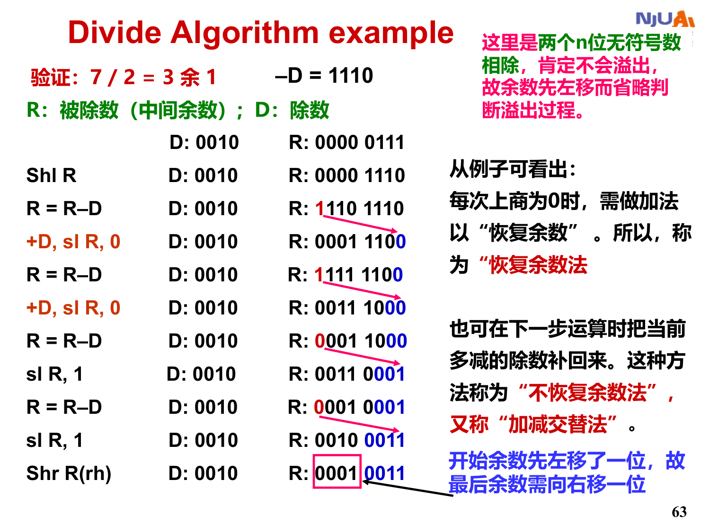
题目设定
被除数 7 = 0111（4 位），除数 D = 0010（4 位）。按 p60 约定补 0，被除数扩为 8 位：0000 0111。−D = 1110（[−2]补）。
应得：商 0011 = 3，余 0001 = 1。
把 PDF 那张表翻译一下
每一轮 4 步：① 左移 R ② R = R−D ③ 看 R 符号位（最高位） ④ 若负则 +D 恢复、上商 0；若非负则上商 1
| 步 | 操作 | R (8 位) | Q 的新位 |
|---|---|---|---|
| 0 | 初始 | 0000 0111 | — |
| 1a | {R,Q} 左移 1 | 0000 1110 | (空位待填) |
| 1b | R = R − D | 1110 1110 (负) | — |
| 1c | +D 恢复，商 0 | 0001 1100 | 0 |
| 2b | R = R − D | 1111 1100 (负) | — |
| 2c | +D 恢复，商 0 | 0011 1000 | 0 |
| 3a | 左移 1 | ...（PPT 已合并） | — |
| 3b | R = R − D | 0001 1000 (正) | 1 |
| 4a | 左移 1 | 0011 0001 | — |
| 4b | R = R − D | 0001 0001 (正) | 1 |
| 末 | R 右移 1 位（纠正） | 0001 0011 | 商已全部进入 Q |
商 Q = 0011 = 3，余数 R 的低 4 位 = 0001 = 1 ✓
因为开始第一步先做了左移（把被除数对齐到 R 的高 4 位），所以最终的"余数"实际上比真值多左移了 1 位。要恢复到正确数值，结束时 R 要右移 1 位。
各教材实现略有差异，有的不做开始那次左移；本课件采用的就是"先左移、最后补一次右移"的版本。
这个算法的缺点（引出 p64）
看上面 6 轮中有 2 轮"试错"（试减后又加回 D 恢复）——每次试错都浪费一个 ALU 周期。能不能省掉这次恢复？答案是下一页讲的不恢复余数法。
不恢复余数法的代数推导
恢复余数法的"浪费"
看一下当试减失败（Ri < 0）时，恢复余数法做了哪三步：
- 恢复：Ri' = Ri + |B|（把刚才多减的加回来）
- 左移：得到 2·Ri' = 2(Ri + |B|) = 2Ri + 2|B|
- 再试减：Ri+1 = (2Ri + 2|B|) − |B| = 2Ri + |B|
关键观察：三步合并成一步——Ri+1 = 2Ri + |B|，只用一次加法，不用先加再减！
另一个分支：试减成功时
若 Ri ≥ 0，本来就够减，操作是左移 → 减：Ri+1 = 2Ri − |B|。这步本来就只用一次减法。
合起来：两条规则
| 当前 R 符号 | 操作 | 下一步公式 |
|---|---|---|
| 负（<0） | 上商 0，做加法 | Ri+1 = 2Ri + |B| |
| 非负（≥0） | 上商 1，做减法 | Ri+1 = 2Ri − |B| |
口诀："负 0 加，正 1 减"。每位只需一次加或减，不需要单独的恢复步骤。这就是"不恢复余数法"得名的由来。
它还有另一个名字叫加减交替法，因为每位都是加或减、不再是"先减再加"的反复。
有个小代价：末位"纠余"
因为不恢复余数法跳过了真正的恢复，所以如果最后一位上商 0（即最后一次是"加法"），余数寄存器里实际是"加了一次 |B| 的虚假值"。结束时要再做一次减法把这次 +|B| 减掉，才得到真正的余数。这就是 PPT 提到的"纠余"。
不恢复余数法（加减交替法）
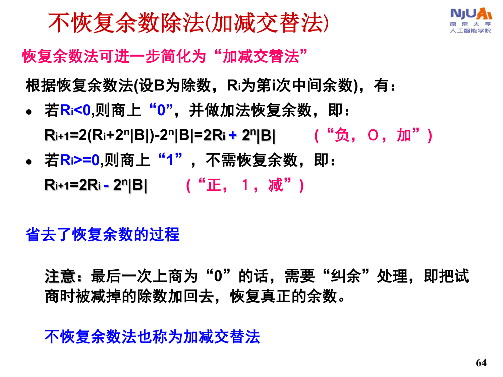
PPT 上的推导（背景页已展开）
- Ri < 0：商 0，做加法 → Ri+1 = 2Ri + |B|（口诀"负 0 加"）
- Ri ≥ 0：商 1，做减法 → Ri+1 = 2Ri − |B|（口诀"正 1 减"）
两点要记牢
- "省去了恢复余数的过程"——这是优化的核心收益
- "最后一次上商为 0 的话，需要纠余"——把试商时多减的 |B| 加回去
具体：如果最后一轮做的是加法（说明上商 0），余数寄存器里的值不是真余数，要单独再做一次减法恢复。如果最后一轮是减法（上商 1），余数已经正确。
"加减交替法"这个名字
不恢复余数法的别名。叫这个名字是因为：每一轮的操作要么加要么减，而且是否加减由上一轮余数的符号决定，所以加和减在执行流里像"交替"出现。
实际上不一定真的严格交替——比如连续几位都商 1，那就连续几次减；连续几位都商 0，那就连续几次加。"交替"只是一种近似说法。
不恢复余数法举例：7 ÷ 2（再做一次）
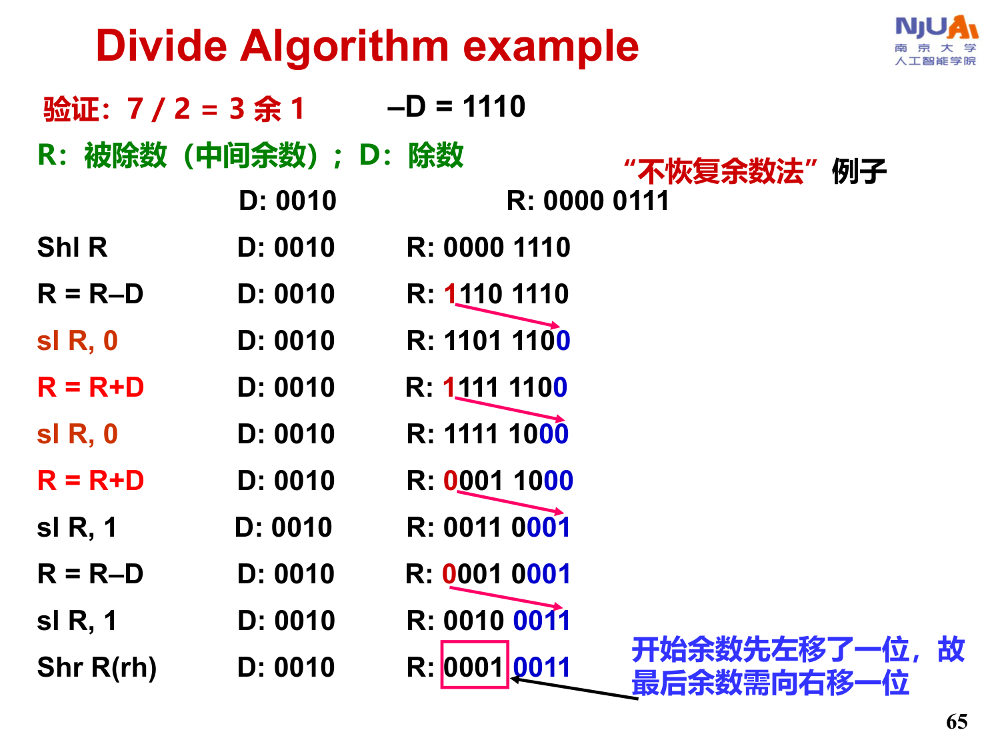
同 p63 的题，看少了哪步
对比 p63（恢复余数法）的关键差异：
- 当 R 减完变负数时，不再 "+D 恢复"——直接进入下一轮"左移 + 加 D"
- 商位依然在每轮算出（看 R 减后是正是负来决定 0 或 1）
逐行对应 PPT 表
| 步 | 操作 | R | 商 |
|---|---|---|---|
| 初始 | {R,Q} = 0000 / 0111 | 0000 0111 | — |
| 1 | Shl R | 0000 1110 | — |
| 1 | R = R − D | 1110 1110 (负) | 0 → Q |
| 2 | Shl R (商 0 已写入) | 1101 1100 | — |
| 2 | R = R + D（不恢复！） | 1111 1100 (负) | 0 → Q |
| 3 | Shl R | 1111 1000 | — |
| 3 | R = R + D | 0001 1000 (正) | 1 → Q |
| 4 | Shl R | 0011 0001 | — |
| 4 | R = R − D | 0001 0001 (正) | 1 → Q |
| 末 | Shr R（纠正最初左移） | 0001 0011 | 商=0011 |
结果商 = 0011 = 3，余数 = 0001 = 1。和 p63 完全一致，但 ALU 操作次数少了。
本题的"纠余"问题不存在
因为最后一轮做的是减法（R 减后仍非负），上商 1，余数已经是正确值，不需要纠余。如果最后一轮做的是加法（上商 0），那余数寄存器里就是"被多加了一次 D"的虚假值，要再减一次 D 才对。
带符号数除法概述
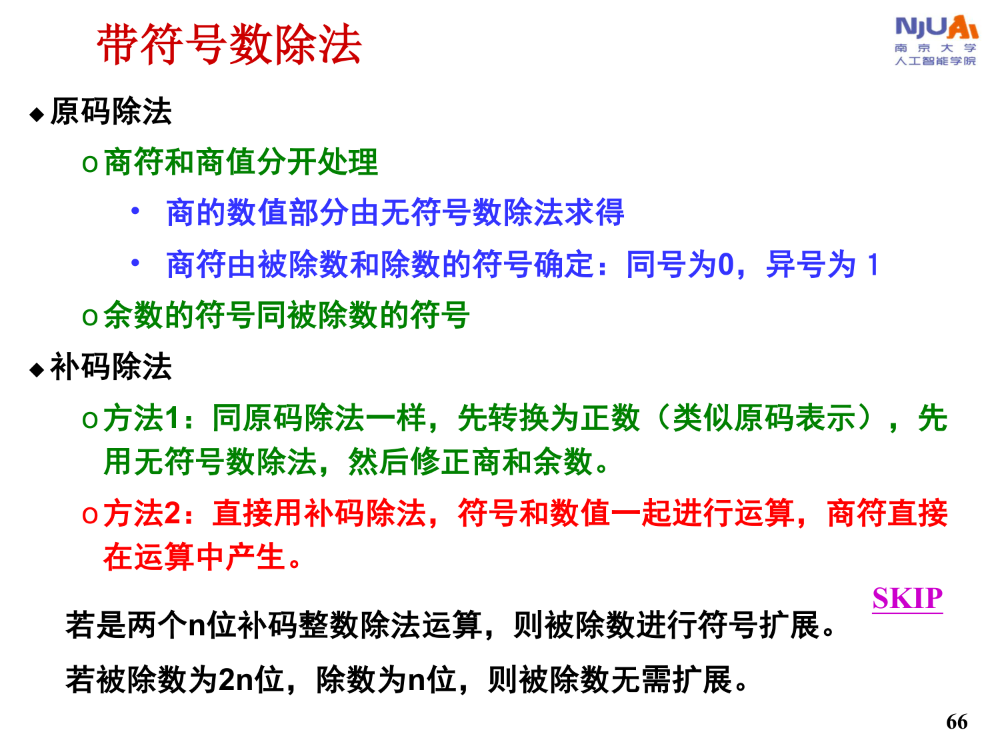
两类做法
原码除法
- 商符与商值分开处理（和原码乘法对称）
- 商值 = |X| ÷ |Y|（用无符号除法做）
- 商符 = X 符号 ⊕ Y 符号（同号正，异号负）
- 余数符号 = 被除数符号
用途：浮点尾数除法（因为浮点尾数是原码形式）。
补码除法
两种思路：
- 方法 1（间接）：先把补码转成原码（绝对值），用原码除法做，再调整符号。要做两次转换，但算法简单。
- 方法 2（直接）：符号位和数值位一起参与运算，商符在运算过程中自然产生。算法复杂但硬件统一、效率高。本课讲方法 2。
关于补码除法被除数的位数
- n 位 ÷ n 位带符号：被除数要做符号扩展，扩成 2n 位（不是补 0！因为补 0 会让负数变成正数）
- 2n 位 ÷ n 位：被除数已经够长，无需扩展
· 无符号除法：被除数高位补 0（因为正数）
· 补码除法：被除数高位补符号位（正数补 0、负数补 1）
搞错这一步整个算法就崩了——比如 [−9]补 = 10111 (5 位)，扩展到 10 位应是
11111 10111（高 5 位全 1），不是 00000 10111（那样就变成 +23 了）。补码"够减"为什么不能直接用余数符号判
无符号除法的"够减"很简单
R 和 Y 都是非负数。R−Y 后看结果符号：
- 结果 ≥ 0 → 够减（"正数 − 正数 = 非负"说明被减数 ≥ 减数）
- 结果 < 0 → 不够减
所以"看新余数的符号位"就够了。
原码同理
原码除法把数值位单独抽出来做无符号除法，所以也一样：直接看数值部分的减法结果符号。
补码就不行了
补码下 R 和 Y 都可能是正可能是负。考虑四种符号组合：
| R 符号 | Y 符号 | R − Y 的预期符号 | 看新余数符号能判够减吗？ |
|---|---|---|---|
| + | + | 常态：够减则 +、不够则 − | 可以直接看 |
| + | − | + − (−) = + + |Y|，恒为正，不会变号 | 看符号没意义 |
| − | + | − − (+) = − − |Y|，恒为负，不会变号 | 看符号没意义 |
| − | − | − − (−) 镜像情况 | 反向解读 |
正确的"够减"判定
这就是 p69 那张表的来源：不能只看新余数符号，要同时看 R 和 Y 的符号。
一句话总结：余数变号 → 不够减；余数不变号 → 够减。但"变没变号"是 R 操作前后两个符号的比较，和"新余数自己的符号"不是一回事。
简化的等价判据：新余数符号 vs Y 符号——这是 p69 表的形式。
原码除法举例（恢复余数法）
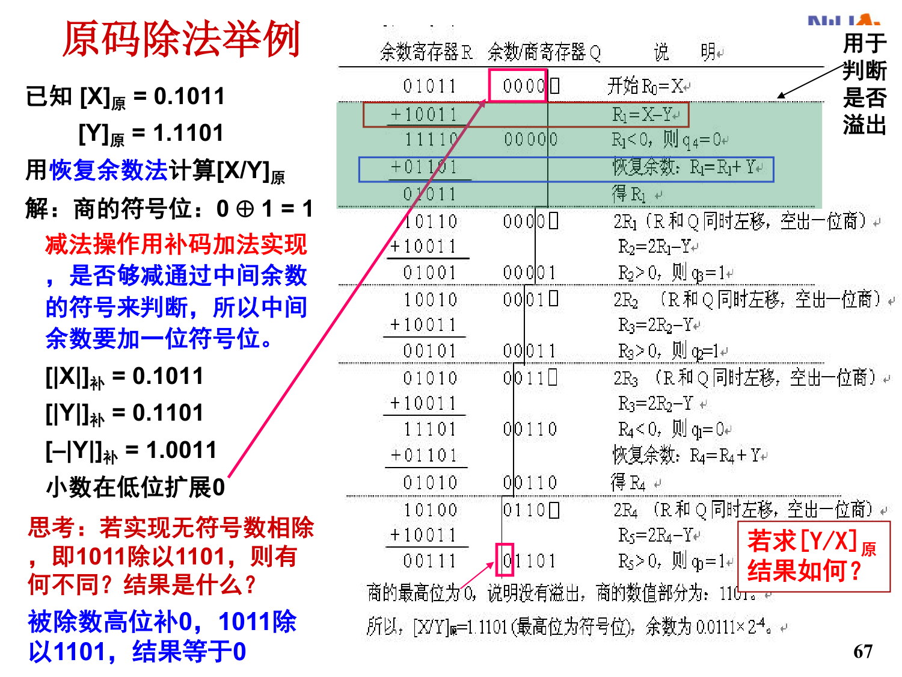
题目
[X]原 = 0.1011（X = +0.6875），[Y]原 = 1.1101（Y = −0.8125），求 [X/Y]原。
预处理
- 商符 = 0 ⊕ 1 = 1（异号，商是负）
- 数值部分用无符号除法算 0.1011 ÷ 0.1101
- 因为减法用补码加法实现，所以预备 [|Y|]补 = 0.1101 和 [−|Y|]补 = 1.0011
- 小数除法在低位扩展 0（按 p60 规则）→ 被除数变成 0.1011 0000
逐步演算（对照 PDF 那张大表）
每一轮做：R = R − |Y|（实际是 R + [−|Y|]补），看新 R 符号决定够不够减；够减则上商 1，不够减则上商 0 并恢复（+|Y|）；然后 R 和 Q 同步左移 1 位空出商位。
每轮要点（这里只列结论，详细数字直接看 PDF 截图）
- 初始 R = 01011，第一次 R + [−|Y|]补 = 01011 + 10011 = 11110（负） → R1<0 → 商 q₄ = 0 → 恢复（+|Y|）→ R = 01011
- R 和 Q 左移、空出一位商，R = 10110
- R + [−|Y|]补 → 01001（正）→ q₃ = 1
- 左移、R = 10010，减后 → 00101（正）→ q₂ = 1
- 左移、R = 01010，减后 → 11101（负）→ q₁ = 0 → 恢复 → R = 01010
- 左移、R = 10100，减后 → 00111（正）→ q₀ = 1
4 位商 = 0.1101（数值部分），加上商符 1 → [X/Y]原 = 1.1101，真值 ≈ −0.8125（验算 X/Y = 0.6875 / 0.8125 ≈ 0.846，这里题目实际位数有限，截到 4 位）。
"中间余数要加一位符号位"
因为减法用补码加法实现，中间余数可能是负值，要有符号位判断"够不够减"。所以中间余数其实是 5 位（1 符号位 + 4 数值位）。看 PDF 表里 R 都是 5 位的 01011、11110 这种就是这个原因。
"用于判断是否溢出"的绿色阴影部分
PPT 上方有一块绿色阴影标"用于判断是否溢出"——指第一次试商。本题第一次商 q₄ = 0，说明不会溢出（商不超过 4 位）。如果第一次试商是 1，说明商超 4 位，要拉溢出。
页面下方思考题"如果实现无符号数相除，即 1011÷1101 结果是什么？"——商 = 0（因为被除数高位补 0 后是 0000 1011，比 1101 小，第一次试减失败、第二次仍失败……最终商为 0），余数 = 1011。
原码除法举例（加减交替法）
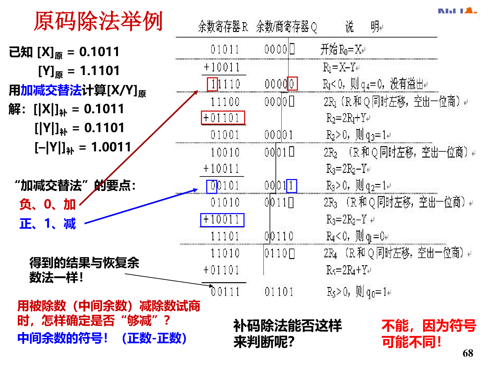
同 p67 的题，换算法
规则（背景页 A3）："正 1 减、负 0 加"。本题数值部分都是非负（原码），所以从第一次必然减开始：
- R = 01011，减 → 11110（负）→ 上商 0，不恢复，继续
- 左移，R = 11100，本来是负，按"负 0 加"→ +|Y| → 01001（正）→ q₃ = 1
- 左移，R = 10010，刚才是正，按"正 1 减"→ −|Y| → 00101（正）→ q₂ = 1
- 左移，R = 01010，正，−|Y| → 11101（负）→ q₁ = 0
- 左移，R = 11010，负，+|Y| → 00111（正）→ q₀ = 1
商 = 0.1101，结果与 p67 完全一致。但只用了 5 次 ALU 操作（vs p67 的 7 次：5 次试减 + 2 次恢复）。
页面右下的关键问答
问：用被除数（中间余数）减除数试商时，怎样确定是否"够减"？
答：看中间余数的符号。因为正数 − 正数，结果非负即够减、负即不够减。
问：补码除法能这样判吗？
答：不能！因为补码下被除数和除数符号可能不同，"够不够减"不能只看新余数符号。这正是 bgA4 讲的事，引出下一页 p69 的规则表。
补码除法：够减判断规则表
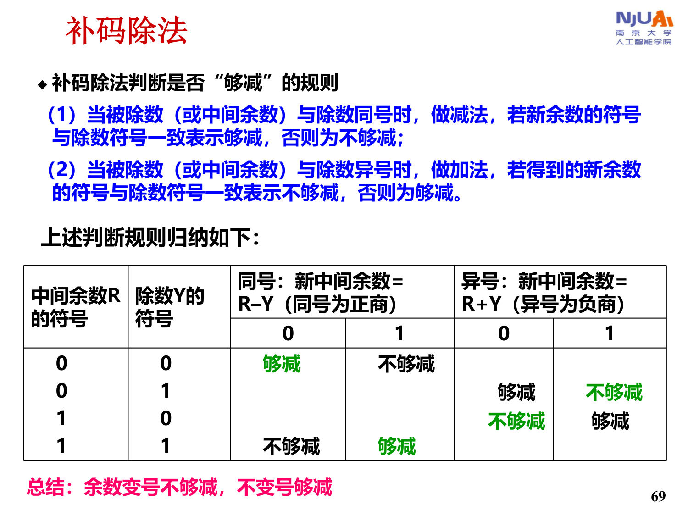
两条主规则
- R 与 Y 同号：做减法（R − Y）。若新余数符号与 Y 同 → 够减；否则不够减。
- R 与 Y 异号：做加法（R + Y）。若新余数符号与 Y 同 → 不够减；否则够减。
4×2 真值表（看 PPT 那张）
| R 符号 | Y 符号 | 同号做减后新符号 0 (+) | 同号做减后新符号 1 (−) | 异号做加后新符号 0 (+) | 异号做加后新符号 1 (−) |
|---|---|---|---|---|---|
| 0 | 0 | 够减 | 不够减 | — | — |
| 0 | 1 | — | — | 够减 | 不够减 |
| 1 | 0 | — | — | 不够减 | 够减 |
| 1 | 1 | 不够减 | 够减 | — | — |
魔法口诀（PPT 红字）
意思：把R 操作前的符号和R 操作后的符号对比。变了 → 操作"过头"了 → 不够减；没变 → 操作幅度合适 → 够减。
等价简化：直接看操作后的新余数符号是否等于 Y 的符号：
- 同号 → 够减 → 商 1
- 异号 → 不够减 → 商 0
补码除法基本思想（三条规则）
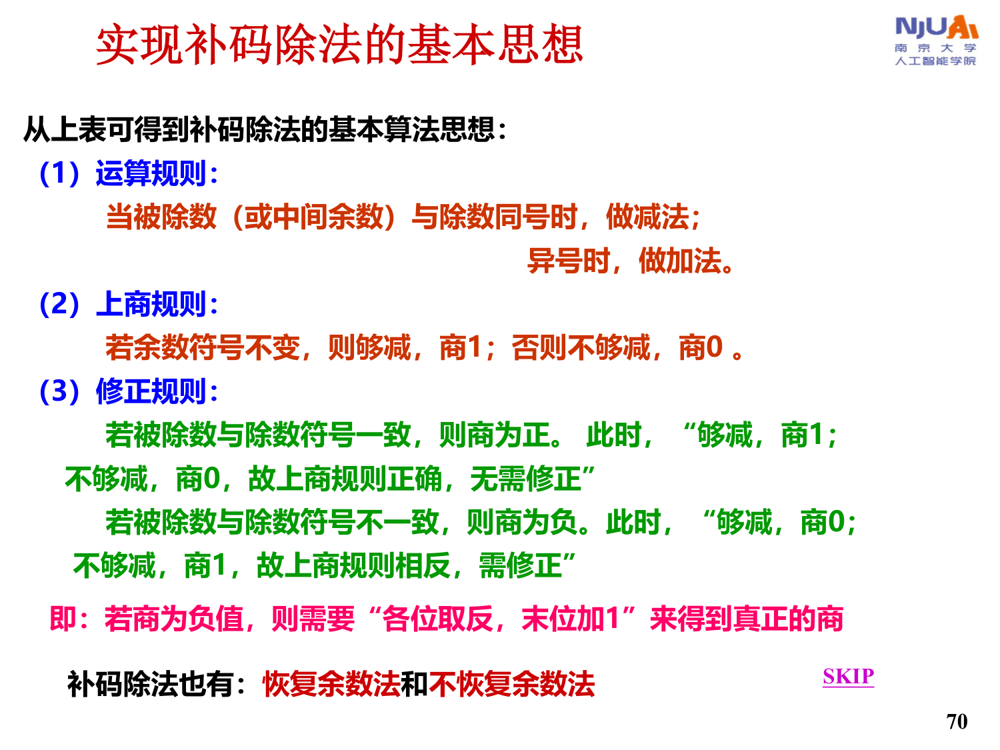
规则一：运算规则
- R 与 Y 同号 → 做减法（R − Y）
- R 与 Y 异号 → 做加法（R + Y）
这是为了让"够减"和"新余数符号"的对应关系统一——所谓"操作让 R 靠近 0"。
规则二：上商规则
- 若余数符号不变（操作前后 R 符号相同）→ 够减 → 商 1
- 若余数符号变了 → 不够减 → 商 0
规则三：修正规则（关键）
上商规则得到的"原始商"可能不是最终商。要修正：
- 被除数与除数同号（商应为正）：上商规则正确，无需修正
- 被除数与除数异号（商应为负）：上商规则反过来——"够减商 0、不够减商 1"——也就是说原始商位是"反码形式"，要各位取反 + 末位加 1 才得到真正的补码
页面红字总结："若商为负值，则需要'各位取反、末位加 1'来得到真正的商"。这就是下一页 bgA5 要解释的"末位加 1"修正。
商为负为什么要"末位加 1"
问题
补码除法的上商规则在商为负时会"反过来"，得到的不是真补码，而是反码 + 末位漏一个 1。为什么？
简单推导
设真正的商是 −0.q₁q₂…qₙ（n 位小数补码形式）。它的补码是：
也就是说，真补码 = "反码 + 2⁻ⁿ"。而上商规则在异号情况下，给出的每位 qᵢ' 恰好是真值反码的形式（够减反成商 0、不够减反成商 1）。所以最终要末位加 1 个 2⁻ⁿ才得到真补码。
直观例子
假设真商是 −0.011（= −0.375）。它的 4 位补码 = 2 − 0.011 = 1.101。
上商规则在异号情况下逐位算出来的"原始商"会是 1.100（反码形式：把数值位 011 各位取反 → 100，再加上负号位 1）。
要从 1.100 得到真补码 1.101，末位加 1 ✓
为什么不直接算成正确补码？
因为补码除法是"边算边上商"的过程，每一位商是通过"够不够减"判断出来的。当商应该是负时，"够减"的语义和正商相反（够减时新余数比期望多了 |Y|，所以应该商 0 而不是 1）。这种语义反转最自然地产生反码形式的商，需要末位 +1 来"对齐"到补码。
这是补码除法这种算法不可避免的代价——快是快了，要在算法末尾加一步修正。
补码恢复余数法（六步算法）
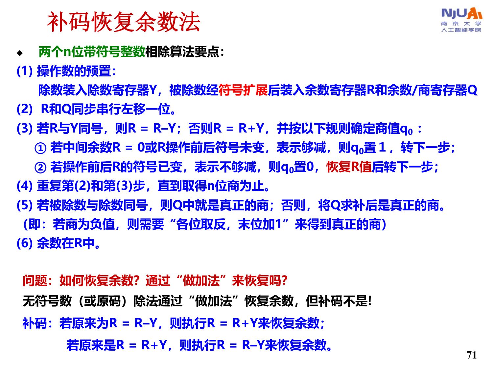
六个步骤
- 操作数预置：除数装 Y；被除数符号扩展装 {R, Q}（R 装高位、Q 装低位）
- {R, Q} 串行左移 1 位
- 根据 R 与 Y 是否同号选择加减：同号 R = R − Y，异号 R = R + Y。然后按下面规则定商位 q₀：
- R = 0 或 R 符号未变 → 够减 → q₀ = 1，转下一步
- R 符号已变 → 不够减 → q₀ = 0，恢复 R 后转下一步
- 重复 (2) (3) 直到得到 n 位商
- 商的修正：被除数与除数同号 → Q 中就是真商；异号 → Q 求补后才是真商（即各位取反、末位 +1）
- 余数在 R 中
关键问题：怎么"恢复余数"
PPT 末段："无符号（或原码）除法通过'做加法'恢复余数，但补码不是！"
补码恢复规则：
- 如果原本做的是 R = R − Y → 恢复要做 R = R + Y
- 如果原本做的是 R = R + Y → 恢复要做 R = R − Y
也就是"反向"做一次，撤销前一次操作。
（这正是数学逻辑：把刚才加上的 ±Y 减/加回去。）
举例：7÷3 与 (-7)÷3
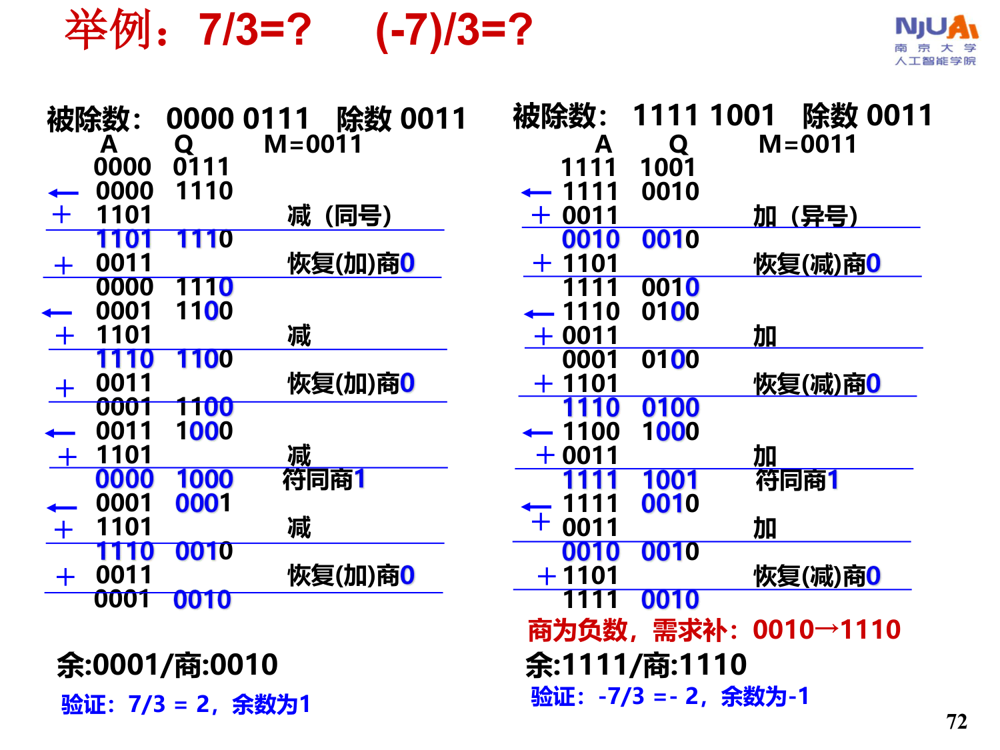
左例：7 ÷ 3（同号）
设定：被除数 X = 0000 0111（8 位补码），除数 Y = 0011，[−Y]补 = 1101，M = 0011 用于恢复。
因 X 与 Y 同号（都正），第一次做减法。
| 步 | A (高 4) | Q (低 4) | 动作 | 注解 |
|---|---|---|---|---|
| 0 | 0000 | 0111 | 初始 | — |
| 1 | 0000 | 1110 | 左移 | 商位空出 |
| 1 | 1101 | 1110 | +[−Y]=减 | 结果 1101 1110，变号→不够减 |
| 1 恢复 | 0000 | 1110 | +Y=0011 | 恢复，q₃=0 |
| 2 | 0001 | 1100 | 左移 | — |
| 2 | 1110 | 1100 | −Y | 变号 → 不够减 |
| 2 恢复 | 0001 | 1100 | +Y | q₂=0 |
| 3 | 0011 | 1000 | 左移 | — |
| 3 | 0000 | 1000 | −Y | 不变号 → 够减, q₁=1 |
| 4 | 0001 | 0001 | 左移 | 商 1 已进 Q |
| 4 | 1110 | 0001 | −Y | 变号 → 不够减 |
| 4 恢复 | 0001 | 0010 | +Y, q₀=0 | — |
因被除数与除数同号 → Q 即为真商 = 0010 = 2，余 R = 0001 = 1 ✓（7 = 3×2 + 1）
右例：(-7) ÷ 3（异号）
设定：[−7]补 = 1111 1001，Y = 0011，[−Y]补 = 1101。
因 R 与 Y 异号，第一次做加法。
| 步 | A | Q | 动作 | 注解 |
|---|---|---|---|---|
| 0 | 1111 | 1001 | 初始 | — |
| 1 | 1111 | 0010 | 左移 | — |
| 1 | 0010 | 0010 | +Y | 变号 → 不够减 |
| 1 恢复 | 1111 | 0010 | −Y（反向恢复） | q₃=0 |
| 2 | 1110 | 0100 | 左移 | — |
| 2 | 0001 | 0100 | +Y | 变号 → 不够减 |
| 2 恢复 | 1110 | 0100 | −Y | q₂=0 |
| 3 | 1100 | 1000 | 左移 | — |
| 3 | 1111 | 1001 | +Y | 不变号（符号同商 1）→ 够减, q₁=1 |
| 4 | 1111 | 0010 | 左移 | — |
| 4 | 0010 | 0010 | +Y | 变号 → 不够减 |
| 4 恢复 | 1111 | 0010 | −Y, q₀=0 | — |
因被除数与除数异号 → Q = 0010 需求补（各位取反 + 末位加 1）= 1101 + 1 = 1110 = −2
余数 R = 1111 = −1。验证：−7 = 3×(−2) + (−1) ✓
补码不恢复余数法
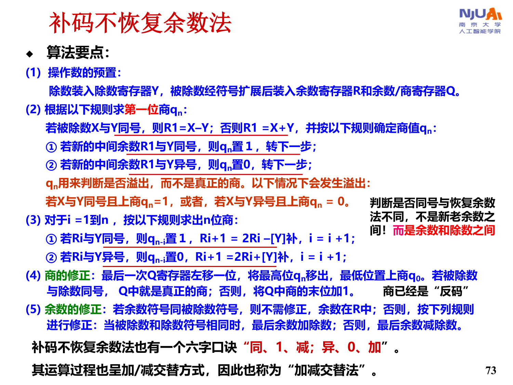
核心思路
和无符号"加减交替法"思想一样：不做恢复，直接调整下一步操作。
五步算法
- 预置：除数装 Y；被除数符号扩展后装 {R, Q}
- 求第一位商 qn（用于判溢出）：
- X 与 Y 同号 → R1 = X − Y；异号 → R1 = X + Y
- 若 R1 与 Y 同号 → qn = 1；异号 → qn = 0
- 求 n 位商：对 i = 1 到 n：
- Ri 与 Y 同号 → qn−i = 1，Ri+1 = 2Ri − Y
- Ri 与 Y 异号 → qn−i = 0，Ri+1 = 2Ri + Y
- 商的修正：最后一次 Q 左移、最高位 qn 移出、最低位上商 q₀。若被除数与除数同号，Q 即为真商；否则 Q 末位加 1
- 余数的修正：若余数符号同被除数 → 无需修正；否则按规则：被除数与除数同号 → 余数加除数；异号 → 余数减除数
口诀总结
这和原码不恢复余数法的"负 0 加、正 1 减"看上去对称但判据完全不同：原码看 R 自己的符号、补码看 R 和 Y 的符号关系。
一定要分清楚。
溢出判断的特别之处
PPT 右上的红字："判断是否同号与恢复余数法不同，不是新老余数之间！而是余数和除数之间"。
强调：不恢复余数法判够减的依据是"新余数 Ri+1 与除数 Y 同号 → 够减"，而恢复余数法版本是看"R 操作前后符号是否变化"。两者代数上等价（数学推导能互推），但判定项不同。
实际写代码时，比较 R 和 Y 的符号比比较 R 操作前后符号更简单，所以不恢复版本用这个判据。
举例：(-9) ÷ 2
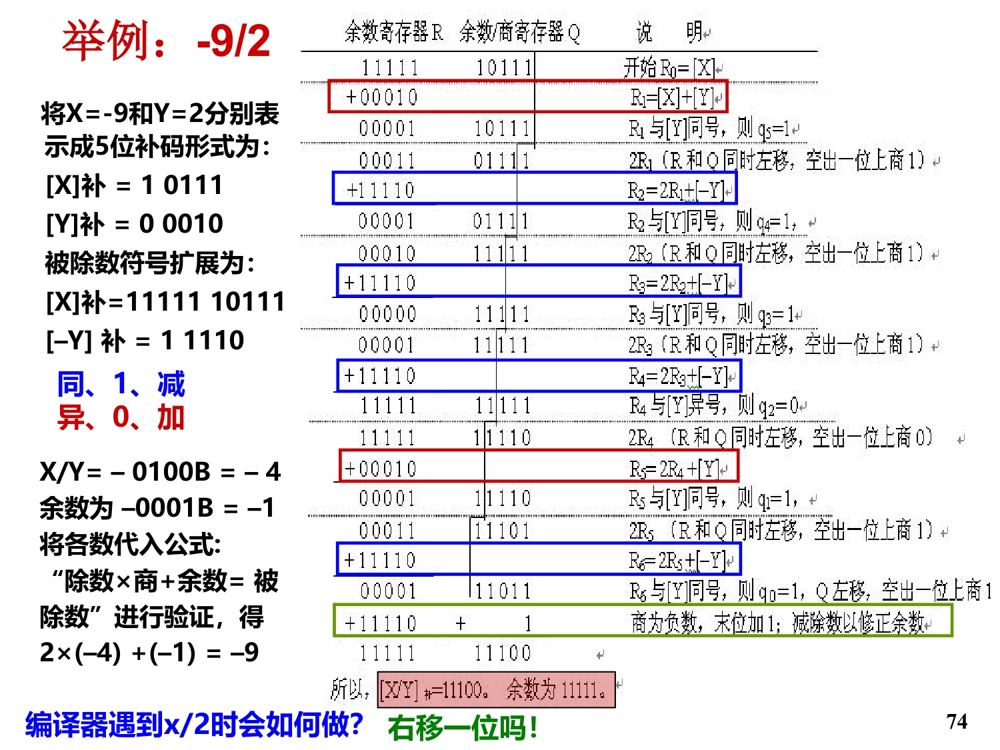
设定（5 位补码）
- X = −9，[X]补 =
1 0111 - Y = 2，[Y]补 =
0 0010，[−Y]补 =1 1110 - 被除数符号扩展到 10 位：[X]补 =
11111 10111（高位用 5 个 1 扩展，因为 X 是负的）
逐步演算（"同 1 减、异 0 加"）
| 步 | R | Q | 对照 | 动作 | 商 |
|---|---|---|---|---|---|
| 0 | 11111 | 10111 | R 负，Y 正 → 异号 | +Y → R₁=[X]+[Y] | — |
| 1 | 00001 | 10111 | R₁ 正，Y 正 → 同号 | q₄=1，左移、−Y | q₄=1 |
| 2 | 00011 | 01111 | 左移完，做 2R₁−Y | R₂=11110+11110 → 同号判定 | — |
| 2 结 | 00001 | 01111 | R₂ 正、Y 正 同号 | q₃=1 | q₃=1 |
| 3 | 00001 | 11111 | 左移后 R 正、Y 正 | 同号 → 2R−Y | — |
| 3 结 | 11111 | 11111 | R 变负、Y 正 → 异号 | q₂=0 | q₂=0 |
| 4 | 11111 | 11110 | R 负、Y 正 异号 | 2R+Y | — |
| 4 结 | 00001 | 11110 | 新 R 正、Y 正 → 同号 | q₁=1 | q₁=1 |
| 5 | 00011 | 11100 | 左移、−Y | R₆=2R₅−Y | — |
| 5 结 | 11111 | 11100 | R 负、Y 正 异号 | q₀=0，Q 左移空出 | q₀=0 |
| 末 | 11110 | +1=11101 | 商为负 → 末位 +1 | 修正 | — |
原始商 Q = 11100，异号 → 末位加 1 → 真商 = 11100？等等，注意 PPT 给的答案：[X/Y]补 = 11100，余数 = 11111。
商 11100 真值 = −0100B = −4，余数 11111 = −1。验算：除数×商 + 余数 = 2×(−4) + (−1) = −9 ✓
PPT 最下面那行红字"编译器遇到 x/2 时会如何做？右移一位吗"——这是引出 p75 的话头。答案是：不能简单右移，因为 (−9)/2 = −4 余 −1（朝零舍入），而 (−9)>>1 = −5（朝负无穷舍入），两者结果差 1。下一节专门讲这事。
C 除法的"朝零舍入"
两种舍入方向
整数除法处理"除不尽"时有两种约定：
- 朝零舍入（truncation）：丢弃小数部分。
正数：6÷4 = 1.5 → 1（小于真值）
负数：(−6)÷4 = −1.5 → −1（大于真值，绝对值小） - 朝负无穷舍入（floor）：永远取不大于真值的最大整数。
正数：6÷4 → 1
负数：(−6)÷4 → −2（小于真值）
C 语言用哪种？
C99 起标准化为朝零舍入（之前实现定义，多数也是朝零）。所以 (-7)/3 在 C 里 = -2，而不是 -3。余数定义为 x − (x/y)*y，所以 (-7) % 3 = -7 - (-2)*3 = -1。
右移就不是朝零舍入
算术右移把数除以 2，但对负数是朝负无穷舍入：
- −9 =
11110111（8 位） - 右移 1 位 =
11111011= −5
而 (−9)/2 在 C 里应该是 −4（朝零）。右移给出的是 −5（朝负无穷），差 1。
怎么修正
负数右移前先加一个"偏置 (2ᵏ − 1)"，再右移就对了。这正是 p75 要讲的算法。
比如 (−9)/2：先 −9 + (2¹−1) = −9 + 1 = −8，11111000 右移 1 = 11111100 = −4 ✓
x / 2 想优化成右移，就必须加上偏置纠正，否则程序行为变了。这是个常被忽略但很重要的优化细节。变量÷常数 — 除以 2ᵏ 的优化
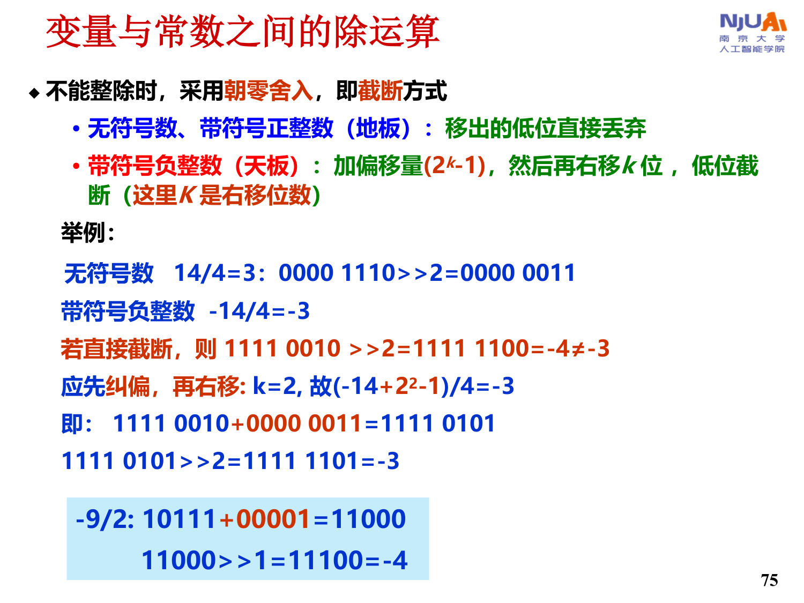
规则总结
除不尽时朝零舍入（C 标准）：
- 无符号 / 带符号正整数（朝下"地板"等价于朝零）：低位直接丢弃 → 右移即可
- 带符号负整数（朝上"天花板"等价于朝零）：先加偏移量 (2ᵏ − 1)，再右移 k 位
举例 1：无符号 14 ÷ 4 = 3
14 = 0000 1110，右移 2 位 = 0000 0011 = 3 ✓
举例 2：带符号 −14 ÷ 4 = −3
错误做法（直接右移）：
−14 = 1111 0010，右移 2 位 = 1111 1100 = −4 ≠ −3
正确做法（先纠偏）：
k = 2，偏移量 = 2² − 1 = 3 = 0000 0011。
−14 + 3 = −11，二进制 1111 0010 + 0000 0011 = 1111 0101。
右移 2 位 = 1111 1101 = −3 ✓
举例 3：(−9) ÷ 2（与 p74 对照）
k = 1，偏移 = 2¹ − 1 = 1。
[−9]补 = 1 0111（5 位），10111 + 00001 = 11000。
右移 1 位 = 11100 = −4 ✓ 与 p74 的算法结果一致。
div32 函数实例
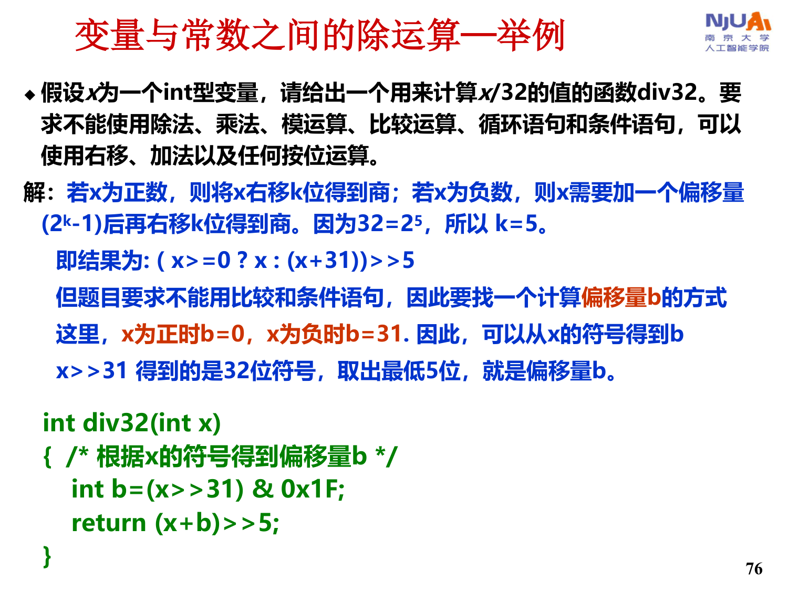
题目
写一个函数 int div32(int x) 算 x/32。不许用除/乘/模/比较/循环/条件语句。可以用右移、加法、按位运算。
思路
32 = 2⁵，所以 k = 5。按 p75：
- 正数：直接
x >> 5 - 负数：先
x + 31，再>> 5
问题：怎么不用 if 判断 x 是正是负？要算出一个变量 b：x 正时 b=0、x 负时 b=31。
关键 trick：用算术右移取符号扩展
x >> 31 把 x 的符号位复制到所有位：
- x 正 → 结果 =
0000 0000 ... 0000 - x 负 → 结果 =
1111 1111 ... 1111
再 & 0x1F（取最低 5 位）：
- 正 → 0
- 负 →
11111= 31 ✓
最终代码
int div32(int x) {
int b = (x >> 31) & 0x1F; // x 正时 b=0, x 负时 b=31
return (x + b) >> 5;
}
把
(x >> 31) & 0x1F 这种"用符号扩展取出 0 或全 1"的写法记下来——后面操作系统、密码学、JIT 编译器里都会反复见到。RISC-V 中整数乘/除运算指令
乘法 4 条指令（回顾）
mul rd, rs1, rs2：低 32 位乘积，无符号 / 带符号通用mulh rd, rs1, rs2：高 32 位，两个都按带符号解读mulhu rd, rs1, rs2：高 32 位，两个都按无符号解读mulhsu rd, rs1, rs2：高 32 位，rs1 带符号、rs2 无符号（混合）
得到 64 位完整乘积需要两条指令配合：mul + mulh（带符号）或 mul + mulhu（无符号）。
RISC-V 哲学：指令简单、不抛异常、由软件判溢出。
除法 4 条指令
div rd, rs1, rs2：带符号除法，得商divu rd, rs1, rs2：无符号除法，得商rem rd, rs1, rs2：带符号取余remu rd, rs1, rs2：无符号取余
边界条件（这是考点）
| 情形 | div 结果 | rem 结果 |
|---|---|---|
| 除零 (rs2 = 0) | 所有位 1（即 −1） | rs1 本身 |
| 带符号溢出 INT_MIN / −1 | INT_MIN | 0 |
RISC-V 不抛硬件异常，把这些边界情况都用特殊返回值表达，由软件检查。
· x86：除零会抛 #DE 异常，操作系统接住
· ARM：除零返回 0（A 系）
· MIPS：除零行为未定义
· RISC-V：返回特殊值
RISC-V 这种"无异常"的设计简化了流水线（不用回滚），缺点是程序员要自己写边界检查。
定点运算部件：综合视角
第二讲的总结性观察
把前面讲过的所有定点运算（加减、乘、除、移位、扩展、逻辑）排排坐，发现：
所以"一个或多个 ALU + 移位器 + 寄存器 + 控制逻辑"就是定点运算部件的全部
这个部件的几种称呼（同一个东西不同名）
- 运算器（Operate Unit）：早期术语
- 运算部件（Operate Unit）：本课件用法
- 功能部件（Function Unit）：现代 CPU 的术语，强调"功能模块"
- 执行部件（Execution Unit）：流水线 CPU 里"执行段"的部件
- 数据通路（DataPath）：硬件描述语言/体系结构课程的术语，强调"数据流动的路径"
含义基本一样，侧重点不同。后面学计算机组成、操作系统、编译原理会反复见到这些术语。
历史演变
- 1970s–80s：单芯片实现 4 位运算部件（如 AM2901A），多个芯片级联拼出 16 位、32 位 CPU
- 1990s 至今：数据通路和控制器都集成在 CPU 内部
- 现代：为支持流水线 / 超标量，一个 CPU 里有多个运算部件并行工作（你的电脑 CPU 里有 4-8 个 ALU、2-4 个乘除器等）
位片处理器的历史背景
"位片"（bit slice）是啥
1970 年代芯片工艺还很差，单颗芯片塞不下完整的 32 位 ALU。AMD 在 1975 年推出 AM2900 系列——把 32 位 ALU 拆成 8 个 4 位"片"，每片是一颗芯片。要用 4 颗级联成 16 位、8 颗级联成 32 位。
级联的关键
为了让多颗芯片协同工作，每颗芯片要暴露进位级联信号：
- C₀ 输入：低位芯片传来的进位
- Cn+4 输出：本芯片向高位芯片送的进位
- P*, G*（"组传递"、"组生成"）：用于多颗芯片之间的并行进位（参考第一讲 CLA 那里的概念，那里讲的是 4 位组之间，这里是 4 位芯片之间，完全同构）
所以 AM2901A 的接口图里那一堆 C0/Cn+4/P*/G* 全是为级联设计的。
双口寄存器堆和 Q 寄存器
AM2901A 内置 16 个 4 位寄存器组成的双口寄存器堆（GRS），可同时读 A、B 两个端口。再有一个专用 Q 寄存器用来配合 ALU 实现乘除——这就是前面 p37 那个乘法器、p62 那个除法器里"Q/R 寄存器"的硬件来源。
可以说AM2901A 是把第二讲所有算法的硬件需求"打包"成一颗芯片。学这一节就是把前面的算法和这颗具体芯片的设计对照起来。
为什么今天还在学
现代 CPU 用纳米工艺集成上亿晶体管，不再级联。但 AM2901A 作为教学经典留下来，因为它结构简单、功能完整，是理解"现代 ALU 内部"的最佳样本。你不会用它做产品，但理解它=理解一整代计算机体系结构的设计思想。
AM2901A 内部结构图
从上往下认零件
- GRS（通用寄存器组，General Register Set）：16 个 4 位寄存器。一写两读（A 口、B 口分别可读不同寄存器）。A0–A3 / B0–B3 是地址输入。
- LA / LB：A、B 口的锁存器，把读出的数稳定住。
- 两个 MUX：选 ALU 的输入。A 端 MUX 可选 LA 输出或外部输入 DA；B 端 MUX 可选 LB、外部 DB 或 Q 寄存器。
- ALU：核心算术逻辑单元。能做 A+B、A−B、B−A，以及 与/或/异或。
- ALU Shifter：ALU 输出的移位器，可左移、右移、不动。
- Q（乘商寄存器）：单独的 4 位寄存器，配合 ALU 实现乘除。
- Q Shifter：Q 的专用移位器，可与 ALU Shifter 联动。
- CU（控制单元）：根据 I0–I8 这 9 位指令码译码出所有控制信号。
- 左右两侧的 SIO3/SIO0/QIO3/QIO0：移位器的串行进出端，用于多芯片级联时把移位信号连起来。
- 下方 Z / Y：Z 是"零标志"（结果是否为 0）；Y 是数据输出。
页面顶部和右下两个问题
- "如何用 AM2901A 芯片实现乘/除运算？" → p81 答
- "如何级联？两个移位器如何连接？" → 多颗芯片串成 16/32 位时，A 芯片的 ALU Shifter 输出 SIO3 接 B 芯片的 SIO0；Q Shifter 同理。这样 4 颗串起来就形成"虚拟"16 位 ALU Shifter / Q Shifter。
AM2901A 的功能和结构（详解）
ALU 部分
能做的运算：A+B、A−B、B−A、与、或、异或等。配备的进位信号：
- C0 输入 / Cn+4 输出：本芯片的进位入/出，用于串行级联
- P*/G*：用于多颗芯片间做组并行进位（CLA 思想的扩展）
- N（负标志）/ O（溢出标志）：和 P*/G* 复用同一引脚（PPT 写作 G*/N、P*/O）
GRS（通用寄存器组）
16 个 4 位寄存器，"双口"意味着：
- 同时读两个寄存器（A 口 + B 口，地址不同也行）
- 同时写一个寄存器（写口跟 B 口共享地址 B0–B3）
这种结构对一条 "rd = rs1 op rs2" 指令非常友好——一拍内读两个源、写一个目的。
Q 寄存器和它的移位器
核心用途：实现乘除。乘法时，Q 寄存器装乘数 / 部分积低位；除法时装被除数低位 / 商。
"ALU 移位器和 Q 移位器一起左移或右移"——这就是 p37 那台乘法器里 {C, P, Y} 联动右移、p62 除法器里 {R, Q} 联动左移的硬件实现。
移位后：ALU 移位器内容送 ALU 准备下次运算；Q 移位器内容送 Q 寄存器。这种"算完写回"的循环就是迭代算法的硬件骨架。
Z 输出（零标志）
对 ALU 结果做"判 0"（n 输入大 OR 门 + 取反），就是 Z 标志。所有 4 颗 AM2901A 的 Z 端要 AND 起来，得到全字宽的零标志（任何一颗非 0 → 整体非 0）。
思考题：用 AM2901A 实现乘 / 除
四步骤总览
- 预置寄存器：
- 乘法：R0 = 0（初始部分积），Q = 乘数，R1 = 被乘数
- 除法：R0 = 被除数高位，Q = 被除数低位，R1 = 除数
- ALU 算加/减，同时联动 ALU 移位器 + Q 移位器：
- 乘法：右移（把已算的低位推到 Q 中）
- 除法：左移（把待处理的高位推到 ALU 中）
- 回写：ALU 移位器送回 ALU 的 A 端（准备下次运算），Q 移位器送 Q 寄存器。
- 重复 ② ③ 直到得出所有乘积位（乘法 32 次）或商位（除法 32 次）。
对照前面的内容
- "R0 是 ALU A 输入" ≈ p37 的 P 寄存器 / p62 的 R 寄存器
- "R1 通过 B 输入" ≈ p37 的 X / p62 的 Y
- "Q 寄存器" ≈ p37 的 Y（乘数） / p62 的 Q（商）
- "ALU + Shifter + Q 联动" ≈ p37 / p62 的核心循环
所以 AM2901A 这颗芯片就是把第二讲学的所有算法的硬件需求统一打包。理解这颗芯片 = 理解前面所有定点运算的硬件起源。
第二讲小结（加减部分）
把这张总结页当复习提纲
定点运算分两类：简单的（逻辑、移位、扩展）电路简单，本课重点在算术运算。算术运算又涉及四种数据：
- 无符号数（unsigned int）
- 带符号整数（补码）（int）
- 原码小数（浮点尾数）
- 移码整数（浮点阶码）
三种加减运算的对照
| 编码 | 符号位处理 | 减法实现 | 溢出判据 | 用途 |
|---|---|---|---|---|
| 补码 | 和数值位一起算 | 用加法做（+[−B]补） | 同号相加 → 结果符号不同 | 整数加减 |
| 原码 | 和数值位分开算 | 同号求差 / 异号求和 | 同号求和 → 数值位最高位进位 | 浮点尾数加减 |
| 移码 | 可一起处理（视作补码） | "减数求补再加" | 两加数符号相同且与和符号相同 | 浮点阶码加减 |
复习建议
把这张表里每一行的"用途"记牢。考试经常出"给一个浮点运算的中间结果，问尾数/阶码该用哪种加减"。用途 ↔ 编码 ↔ 算法这条链不能断。
第二讲小结（乘除部分）
乘法 4 种
| 类型 | 核心操作 | 用途 |
|---|---|---|
| 无符号乘 | "加 + 右移"，循环 n 次 | 整数乘法的基础 |
| 原码（一/两位）乘 | 符号位异或、数值位用无符号乘 | 浮点尾数乘 |
| 补码（一/两位）乘 | 符号和数值一起算，Booth 算法 | 带符号整数乘 |
| 课件划掉了，说明本课没深入讲 | — |
除法 4 种
| 类型 | 核心操作 | 用途 |
|---|---|---|
| 无符号除 | "加/减 + 左移"。有恢复余数 / 不恢复余数两种 | 整数除法基础 |
| 原码除 | 符号位异或、数值位用无符号除 | 浮点尾数除 |
| 划掉，但本课讲了。符号位和数值位一起算 | 带符号整数除 | |
| 难做流水线，可做阵列 / 用乘法实现 | — |
"为什么除法快不起来"
课件提到"很难实现流水化除法器"。原因：除法每一步的下一步操作依赖于当前余数符号（"够减"判断），数据依赖强，很难拆成独立级流水。
现代 CPU 的乘法通常 3-5 周期出结果（流水线），除法通常 20-30 周期（串行）。除法是 CPU 里最慢的基本运算，能不用尽量不用——这就是为什么编译器会用各种技巧（如 p75-76 的"除以常数 → 右移"）回避除法指令。
底部一行：定点部件构成
ALU + GRS（通用寄存器组） + MUX + Shifter（移位器） + Q 寄存器，由 CU（控制单元）控制执行。这正是 AM2901A 的内部结构（p79）。
本章总结 (1) — 定点数运算
把这张当一张"知识地图"
整个第6章的定点运算可以归结为"ALU + 移位器"这两块的不同组合。下面把每一类运算的"硬件招式"列一遍。
移位运算（三种）
- 逻辑移位：对无符号数。左/右移空出来补 0，移出去丢弃。
- 算术移位：对带符号补码。移位前后符号位不变。算术右移 = "÷2 朝负无穷"，算术左移 = "×2 但要查溢出"。
- 循环移位：移出去的位循环回来填入另一头。常用于密码学、位旋转。
扩展运算（两种）
- 零扩展：无符号数高位补 0
- 符号扩展：补码整数高位补符号位（正补 0、负补 1）
这两个看似简单，但在不同位宽变量赋值（uint8 → int32 等）时极其重要，写错会导致难调的 bug。
加减运算（两种）
- 补码加/减：整数加减。符号位与数值位一起，减法用加法实现。"同号相加，结果符号不同 → 溢出"
- 原码加/减：浮点尾数加减。符号位与数值位分开。"同号相加、异号相减；加法直接加；减法用加负数的补码实现"
乘法运算（两种）
- 补码乘：整数乘法。符号位和数值位一起算，Booth 算法。
- 原码乘：浮点尾数乘。符号位与数值位分开，数值部分用无符号乘。
共同硬件骨架：加 + 右移。
除法运算（两种）
- 补码除：整数除法。符号位和数值位一起算。"同 1 减、异 0 加"。
- 原码除：浮点尾数除。符号位与数值位分开，数值部分用无符号除。
共同硬件骨架：加/减 + 左移。
本章总结 (2) — 浮点 & ALU
浮点运算的整体框架
这页其实是"第三讲（浮点运算）"的总结大纲。本课件没单独讲第三讲，但 PPT 还是放了总结要点，给你预习。后面跟我的"浮点入门"补充页对应起来看。
加减运算的 5 步
- 对阶：让两数的阶码相同（小阶向大阶看齐，尾数右移）
- 尾数相加减（按原码加减）
- 规格化：把结果调整成 "0.1xxx × 2ᵉ" 的标准形式
- 舍入：处理超出位数的部分
- 判溢出：阶码上溢 / 下溢
乘除运算
- 尾数用原码乘/除（前面学的）
- 阶码用移码加/减（前面学的）
这就是为什么前面要专门讲原码乘除和移码加减——浮点运算就是它们的复用。
精度处理
- 中间结果需要额外的保护位 / 舍入位 / 粘位
- 四种舍入：就近舍入 / 正向舍入 / 负向舍入 / 截去
ALU 的关键性能因素
- 加法是所有运算的基础——乘除都用加法迭代实现，所以加法速度直接决定全机性能
- 影响加法速度的核心 = 进位方式
- 并行进位（CLA）用"进位生成 G + 进位传递 P"两个函数把每位进位独立、并行算出来
这一条把第一讲（CLA）和第二讲（乘除依赖加法）串成了一个闭环：整个第6章的根基是 CLA 那个加法器。
—— PDF 课件正文到此结束（共 85 页）——
下面是我补充的浮点数入门 6 节，帮你打通 p85 提到的浮点概念。
浮点 1：为什么需要浮点 + IEEE 754 格式
定点数的局限
32 位定点整数范围 [−2³¹, 2³¹) ≈ ±2.1×10⁹，无法表示：
- 很大的数：地球到太阳距离 1.5×10⁸ km = 1.5×10¹¹ m
- 很小的数：原子直径 1×10⁻¹⁰ m
- 非整数：1/3、π、√2
科学计算需要动态范围极大、精度可调的数。浮点数就是为此设计——借鉴科学记数法的思路。
浮点数的一般形式
- S：符号位（0 正 1 负），1 位
- M：尾数（mantissa），表示有效数字，定点小数
- E：阶码（exponent），定点整数
IEEE 754 标准（最常用，C/Java/JS 都用）
| 类型 | 总位数 | S | E（阶码） | M（尾数） | 近似范围 |
|---|---|---|---|---|---|
| 单精度 float | 32 | 1 | 8 | 23 | ±1.18×10⁻³⁸ 到 ±3.4×10³⁸ |
| 双精度 double | 64 | 1 | 11 | 52 | ±2.23×10⁻³⁰⁸ 到 ±1.8×10³⁰⁸ |
关键约定：规格化 + 隐藏位
IEEE 754 规定尾数必须是 1.xxxxx 形式（整数部分必为 1），这叫规格化。
既然第一位永远是 1，那就不存了——这位叫"隐藏位"。所以 23 位尾数实际表示 24 位精度。
阶码用"偏置移码"
阶码用移码表示——这就是 p82 讲"移码用于浮点阶码"的来源。
单精度偏置 = 127，所以 E = 真实阶 + 127。例：真实阶 = 0 → 存 0111_1111；真实阶 = 1 → 存 1000_0000。
例：用单精度表示 6.25
- 6.25 = 110.01₂ =
1.1001 × 2² - S = 0（正）
- 真实阶 = 2，存的 E = 2 + 127 = 129 =
1000 0001 - M = 1001 后面补 0 到 23 位（隐藏首位 1）
- 合起来：
0 10000001 10010000000000000000000
浮点 2：特殊值与非规格化数
IEEE 754 用阶码 E 的两个"端点"编码特殊值
设阶码字段范围 [0, 255]（8 位）。"正常"数 E 在 [1, 254]。两端预留给特殊值：
| E (阶码字段) | M (尾数字段) | 表示 | 说明 |
|---|---|---|---|
| 0 | 0 | ±0 | 有 +0 和 −0 之分 |
| 0 | ≠ 0 | 非规格化数 | 下面解释 |
| 1–254 | 任意 | 规格化数 | 常态 |
| 255 | 0 | ±∞ | 溢出 / 除零 |
| 255 | ≠ 0 | NaN | Not a Number，无效运算结果 |
非规格化数（denormal / subnormal）
规格化数最小是 1.0 × 2⁻¹²⁶ ≈ 1.18×10⁻³⁸。比这更小的数怎么办？
IEEE 754 用 E=0 但 M≠0 表示"非规格化数"，隐藏位不再当 1，而是当 0：
这样可以平滑过渡到 0，提供"渐进下溢"——避免下溢直接跳到 0 导致精度损失断崖。
NaN 的两种
- quiet NaN (qNaN)：传播但不抛异常。比如 0/0、∞−∞ 的结果。
- signaling NaN (sNaN)：触发硬件异常。一般不用。
NaN 的特性：NaN ≠ NaN（这是判断 NaN 的常用方法：x != x 为真 → x 是 NaN）。
±0 和 ±∞
+0 == −0在比较时成立，但在除法中区分：1.0 / +0.0 = +∞，1.0 / −0.0 = −∞+∞ + 1 = +∞，+∞ − +∞ = NaN
浮点 3：加减运算的 5 步流程
用一个例子贯穿：1.0 × 2³ + 1.1 × 2¹（十进制 8 + 3 = 11）
步骤 1：对阶
规则：小阶向大阶看齐——把小阶数的尾数右移，每右移一位阶码 +1。
本例：1.1×2¹ → 0.011×2³（尾数右移 2 位、阶码 +2）。
为什么"小阶向大阶看齐"：尾数右移时丢的是最低位（精度损失小）；如果反过来"大阶向小阶看齐"要左移大数的尾数，会丢失高位（精度灾难）。
步骤 2：尾数相加减
对齐后：1.000 + 0.011 = 1.011
步骤 3：规格化
检查结果尾数是否是 1.xxx 形式。本例 1.011 已经是，无需调整。
两种规格化操作：
- 左规：当结果尾数是
0.0...01xxx（首部多个 0），左移尾数 + 减阶码，直到首位为 1
例：0.001 × 2³ → 1.000 × 2¹（左移 2 位、阶码 −2） - 右规：当结果尾数是
1x.xxx（整数部分 ≥ 2），右移 1 位 + 加阶码
例：1.1 + 1.1 = 11.0 → 1.10 × 2¹
步骤 4：舍入
右移或对阶时丢出去的位要按规则舍入（下一节讲）。本例没有丢位，不用舍入。
步骤 5：判溢出
检查规格化后的阶码是否在合法范围（单精度 −126 到 +127）：
- 阶码 > +127 → 上溢 → 结果设为 ±∞
- 阶码 < −126 → 下溢 → 结果设为 ±0 或非规格化数
本例阶码 3，正常。
最终结果
1.011 × 2³ = 1011₂ = 11 ✓
浮点 4：乘除运算
浮点乘法比加法简单
不需要对阶（这是浮点乘法的最大优势）。直接：
- 符号位：S = S₁ ⊕ S₂
- 尾数相乘：M = M₁ × M₂（按原码小数乘法做）
- 阶码相加：E = E₁ + E₂ − bias（因为两个偏置加起来要扣一个）
- 规格化、舍入、判溢出
例：1.5 × 2.0 = 3.0
- 1.5 = 1.1₂ × 2⁰，符号 0，阶码 127，尾数 1.10000...
- 2.0 = 1.0₂ × 2¹，符号 0，阶码 128，尾数 1.00000...
- 符号：0 ⊕ 0 = 0
- 尾数：1.1 × 1.0 = 1.10 (没右规)
- 阶码：127 + 128 − 127 = 128（即真实阶 = 1）
- 结果：1.10 × 2¹ = 11₂ = 3.0 ✓
浮点除法
类似乘法，把"相乘"换成"相除"：
- 符号 = 异或
- 尾数相除（按原码小数除）
- 阶码相减 + bias
- 规格化、舍入、判溢出
哪里用到本课的算法
| 浮点运算 | 用到的定点算法 |
|---|---|
| 对阶 / 调阶 | 移码加减（p31-32） |
| 尾数加减 | 原码加减（p29-30） |
| 尾数乘除 | 原码乘 / 原码除（p39-40, p67-68） |
| 阶码加减 | 移码加减（p31-32） |
浮点 5：舍入与保护位
为什么需要舍入
浮点运算中间结果可能比目标精度多很多位。比如对阶时右移可能产生 20 多位"额外"小数。这些位不能直接扔——会损失精度；要按规则"舍入"。
IEEE 754 的 4 种舍入方式
| 名称 | 规则 | 例：1.6 舍入 | 例：1.4 舍入 | 例：1.5 舍入 |
|---|---|---|---|---|
| 就近舍入（默认） | 取最接近的；正好半数时取偶数 | 2 | 1 | 2（偶数） |
| 正向舍入（朝 +∞） | 取不小于真值的最小 | 2 | 2 | 2 |
| 负向舍入（朝 −∞） | 取不大于真值的最大 | 1 | 1 | 1 |
| 截去（朝 0） | 直接丢掉小数 | 1 | 1 | 1 |
为什么"半数时取偶数"
"四舍五入"在大量数据上会引入系统性向上偏差（0.5 总向上）。"就近偶数舍入"在 0.5 时根据相邻偶数决定，统计上偏差为 0，更公平。
这也叫"银行家舍入"，金融场合常用。
保护位 / 舍入位 / 粘位（GRS bits）
为了正确舍入，硬件在尾数末尾保留额外 3 位：
- Guard bit (G)：尾数右移时挤出的第 1 位（最高的"额外位"）
- Round bit (R)：挤出的第 2 位
- Sticky bit (S)：挤出的所有后续位的 OR（只要有任何一位是 1 就是 1）
为什么需要 Sticky
考虑舍入 1.0000...0101（小数点后第 4 位起是 0101）。如果只看 GR=01，会判为"小于半数"舍下去；但后面还有 01，真实值已经大于 0.10000...01 中间。Sticky 把"后面是否非 0"压缩成 1 位，避免漏判。
三位拼起来怎么判（就近偶数舍入）
| G R S | 动作 |
|---|---|
| 0 ? ? | 舍下（< 半数） |
| 1 0 0 | 正好半数 → 看保留尾数末位：偶则舍下、奇则进上 |
| 1 ? ? (R或S有1) | 大于半数 → 进上 |
例：
(0.1 + 0.2) + 0.3 和 0.1 + (0.2 + 0.3) 在 IEEE 754 双精度下结果不同。浮点 6：溢出与精度问题
两种溢出
- 阶码上溢（Overflow）：阶码 > +127（单精度）。结果设为 ±∞，触发 overflow 异常。
- 阶码下溢（Underflow）：阶码 < −126。结果设为非规格化数或 ±0，触发 underflow 异常（一般可忽略）。
尾数无所谓"溢出"
尾数加减如果结果超过 1.xx，右规一次就解决了（同时阶码 +1）。所以尾数本身不会真正溢出——溢出永远表现为阶码的范围问题。
除非阶码本身已经在边界，再 +1 就上溢——这时才是真正的溢出。
精度问题：浮点不是数学的实数
浮点数无法精确表示多数十进制小数：
- 0.1（十进制）= 0.000110011001100...（二进制）无限循环，舍入到 23 位有误差
- 所以
0.1 + 0.2 == 0.3在 C / Python / JS 里都是 false！
三个典型陷阱（编程必记）
- 不要用 == 比较浮点。用
abs(a - b) < epsilon代替。 - 大数加小数会丢精度：
1e20 + 1.0 == 1e20（1.0 在对阶时被右移到全 0）。 - 运算次序影响结果：浮点加法不满足结合律。
累加大量数时，从小到大累加精度更高（小数不会被一开始的大数"吃掉"）。
浮点的本质
浮点数是"对实数的稀疏采样"——它用 32/64 位有限信息覆盖巨大动态范围，必然在精度上做妥协。
把它当成"一种带容差的数学"来用，永远留出 epsilon 比较余量，就能避开大部分坑。
—— 浮点入门 6 节结束 ——
至此整本第6章（除法、定点部件、浮点入门）讲解完毕。把第二讲完整版（p23-57）+ 本份（p58-85+浮点）合起来看，你已经掌握 ALU 内部的全部细节。